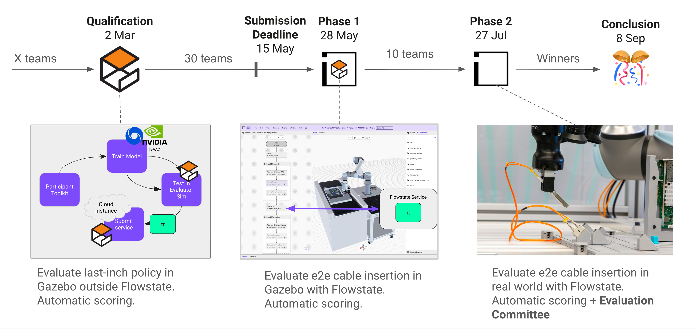
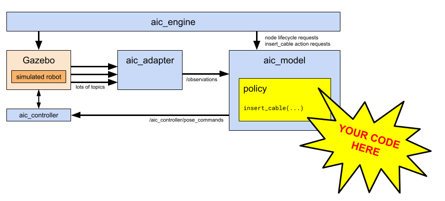

The AI for Industry Challenge targets a critical bottleneck in modern manufacturing: electronics assembly. Specifically, it focuses on dexterous cable management and insertion—a task that currently remains largely manual and repetitive.
From a robotics perspective, this task is notoriously difficult due to the complex physics involved in manipulating flexible cables and the extreme precision required to perceive, handle, and insert connectors.
The Goal:
Participants will train an AI model using open-source simulators (e.g., Isaac Sim, MuJoCo, Gazebo), leveraging ROS for communication. This is your opportunity to bridge the sim-to-real gap and make tangible progress on a significant real-world problem.
The Reward:
Finalists will deploy their models from simulation to a physical workcell hosted at Intrinsic’s HQ. The top five teams will share a $180,000 prize pool.
The challenge officially begins on March 2 and runs through September 8, 2026. It consists of three distinct phases:
For a detailed breakdown of expectations and deliverables, please refer to Competition Phases.
Scoring across all three phases is automated. Rankings are determined by a combination of the following criteria:
For details, see Scoring and the Scoring Test & Evaluation Guide.
To advance in the challenge and remain eligible for prizes, teams must submit their models at the end of each phase.
For detailed upload instructions, see Submission Guidelines.
We provide several baseline policy implementations to help you get started, including a minimal example, a ground truth-based policy for debugging, and an ACT (Action Chunking with Transformers) policy.
For details on running these policies, see the Example Policies README and the Policy Integration Guide.
Ready to begin? Please consult the Getting Started Guide.
From ~/Documents/aic/.planning/PROJECT.md — this is the *user's* project that builds on top of AIC.
A plug-and-play 6D object pose estimation framework built inside the AIC competition toolkit. Provides a registry of pose estimators (GigaPose, CNOS, FoundationPose, HappyPose, EDF) behind a common interface, with BOP-format datasets, CLI tooling, and ROS 2 integration. Designed to benchmark methods systematically against each other and be extractable as an open-source tool post-competition ("LeRobot for pose estimation").
Systematically compare 6D pose estimation methods on the same data with the same metrics, so we can pick the best pipeline for AIC cable insertion — and release the framework as a reusable open-source tool.
Competition: AI for Industry Challenge (AIC) — UR5e robot inserting cables into ports on a task board. Qualification deadline May 15, 2026. Scoring: 75pts for full insertion, 12pts max duration bonus, 6pts smoothness, 6pts efficiency.
Strategic insight: Perception is the bottleneck. CheatCode scores ~93 with ground truth poses. The gap is replacing GT TF lookups with camera-based pose estimation. Control logic (impedance insertion + spiral search) is largely solved.
Hardware: 3 Basler wrist cameras (1152×1024 RGB, 20fps, 60° yaw separation, 75° pitch down). No depth sensor. 186mm L-R baseline enables multi-view triangulation (~0.3-0.5mm depth precision at 250mm).
Existing work: 15 commits on archive/aldrin-gigapose (D-06e, frozen and migrated into aic_vision/). 10+ commits on aldrin/aic-vision delivered
Renders via Mermaid 10 (CDN). If the diagram doesn't appear after switching to this tab, check your network or open DevTools console for errors.
Source: aic_engine/src/aic_engine.cpp:682 (Engine::handle_trial). Each state has up to 5 retries; failure at any step ends the trial.
This is the architectural insertion point for the user's aic_vision CV pipeline. The diagram below shows where ground-truth flows through CheatCode (cyan) and where a CV-based submission must replace that lookup with image-based estimation (orange).
From /tmp/aic_eval_cycle.md section 1.
aic_engine (C++). main() at aic_engine/src/main.cpp:24 — calls engine->start() then rclcpp::shutdown(). Exit code = 0 if final state is EngineState::Completed, else 1.Engine::start() → initialize() → run() (aic_engine.cpp:348). run() (aic_engine.cpp:567) iterates over every trial parsed from the YAML and calls handle_trial(trial).cleanup_model_node() + shutdown_model_node() + validate_model_shutdown() + score_run(...) write ${HOME}/aic_results/scoring.yaml (or ${AIC_RESULTS_DIR}/scoring.yaml).Engine::handle_trial, aic_engine.cpp:682)
Uninitialized
→ check_model() [discover lifecycle node + transition to ACTIVE]
ModelReady
→ check_endpoints() [adapter node + required scoring topics + spawn service]
EndpointsReady
→ ready_simulator(trial) [spawn task_board + cable via /gz_server/spawn_entity]
SimulatorReady
→ ready_scoring(trial) [open rosbag, subscribe to scoring topics, wait for TFs]
ScoringReady
→ tasks_started(trial) [send InsertCable goal to /insert_cable action server]
TasksExecuting
→ tasks_completed_successfully(trial)
AllTasksCompleted → score_trial() → returns TrialScore
Each non-terminal step has up to 5 retries (MAX_RETRIES = 5, aic_engine.cpp:687). A failure at any step makes the engine: reset_after_trial() → engine_state_ = Error → return the (largely zero) TrialScore. The remaining trials are still attempted because the outer loop in run() only breaks on engine_state_ == Error after recording the breakdown.
Per-task. Set by time_limit (seconds) inside each task block in the YAML — sample_config.yaml uses 180s for every task. In code: aic_engine.cpp:1394-1402 —
if (!wait_for_interruptible(result_future,
std::chrono::seconds(task.time_limit))) {
insert_cable_action_client_->async_cancel_goal(goal_handle);
current_attempt.state = TaskState::TimeLimitExceeded;
return false;
}
The scoring tier-2 bag recorder is sized to max_task_limit + 5 seconds (aic_engine.cpp:1325).
result.result->success == true returned from /insert_cable action before the time limit expires.success=false, or any pre-task readiness check failing all 5 retries./scoring/insertion_event was published by the Gazebo cable plugin with namespace == "<target_module_name>/<port_name>" — this drives the Tier-3 75-point bonus regardless of what the action handler said (ScoringTier2.cc:825-848).Engine::score_trial() → aic_engine.cpp:1995 calls ScoringTier2::ComputeScore().ScoringTier2::ComputeScore() → aic_scoring/src/ScoringTier2.cc:181. Reads the rosbag back, then computes:GetInsertionForceScore() — ScoringTier2.cc:874GetContactsScore() — ScoringTier2.cc:922ComputeTier3Score() — ScoringTier2.cc:813 (binary insertion + partial-insertion fallback via GetDistanceScore() at line 698)GetTaskDurationScore() — ScoringTier2.cc:941GetTrajectoryJerkScore() — ScoringTier2.cc:543GetTrajectoryEfficiencyScore() — ScoringTier2.cc:655handle_trial immediately after ModelReady (aic_engine.cpp:706 — score.tier_1_success()). Tier-1 has no separate scorer; the binary aic_scoring/src/ScoringTier1.cc is a standalone topic-rate validator not wired into the engine for qualification trials.Engine::score_run() → aic_engine.cpp:2009 — writes <scoring_output_dir>/scoring.yaml. scoring_output_dir defaults to $HOME/aic_results (overridable via AIC_RESULTS_DIR).From /tmp/aic_eval_cycle.md section 4.
aic_example_policies/aic_example_policies/ros/CheatCode.py:209-227:
port_frame = f"task_board/{task.target_module_name}/{task.port_name}_link"
cable_tip_frame = f"{task.cable_name}/{task.plug_name}_link"
...
port_tf_stamped = self._parent_node._tf_buffer.lookup_transform(
"base_link", port_frame, Time())
The TF chain task_board/<target_module_name>/<port_name>_link and <cable_name>/<plug_name>_link only exists on /tf when ground_truth:=true. CheatCode's _wait_for_tf even prints "are you running eval with ground_truth:=true?" (line 63) when the lookup times out.
A real policy reads the Observation message delivered at ~20 Hz via get_observation() and computes the port pose itself, typically from:
observation.left_image / center_image / right_image (sensor_msgs/Image from three wrist cameras) + corresponding *_camera_info.observation.joint_states to compute the camera extrinsic relative to base_link via the URDF.observation.wrist_wrench + observation.controller_state.fts_tare_offset.wrench for contact-confirmed seating.The CV pose-estimation stack plugs in inside the policy's insert_cable() body, replacing the _parent_node._tf_buffer.lookup_transform("base_link", port_frame, ...) call with an estimate computed from the three RGB camera streams. Everything downstream (motion targets, IK, etc.) stays identical.
ground_truth flag flips topologyaic_engine.cpp:310): declares the ground_truth ROS param (default false).aic_engine.cpp:1908): cmd << " ground_truth:=" << (ground_truth_ ? "true" : "false"); — the xacro uses it to decide whether to emit Gazebo plugins that publish the per-port TF frames onto /scoring/tf.aic_bringup/launch/aic_gz_bringup.launch.py:367-394):ground_truth_tf_relay: topic_tools relay from /scoring/tf → /tf. Conditional on IfCondition(ground_truth).ground_truth_static_tf_publisher: static TF world → aic_world. Conditional too.ground_truth:=false (the real submission mode, which docker-compose.yaml:9 sets):/scoring/tf topic still exists — Gazebo bridges it (see ros_gz_bridge_config.yaml lines 57-92) — and the engine still uses it for its own scoring buffer (ScoringTier2.cc:118-124, 213-216). So scoring is always done against ground truth./tf is OFF, so the policy cannot see the cable / task-board pose frames on /tf.aic_world static TF is also missing, which would break any policy that tries to look up aic_world directly.There is no "engine evaluates against the policy's own pose estimate" — the engine always scores using ground-truth TFs from /scoring/tf recorded into the rosbag, regardless of what the policy sees. The ground_truth flag only controls whether the policy is given a free copy of those TFs on /tf. In submission mode (ground_truth:=false), the policy must estimate poses; the scorer compares those estimates' downstream behavior (final plug position, insertion event) against the simulator's ground truth.
Built from resources/aic_object_inventory.json spawn paths.
Drag to pan · scroll wheel to zoom · click a node for inventory details ·
click circle to collapse/expand subtree.
Mirrors Gazebo SDF model structure: aic_world → top-level included models (ur5e, task_board, cable, enclosure) → their link/sub-model hierarchy from the per-model SDFs and task_board.urdf.xacro.
Same depth + ordering as the Isaac Sim tree.
Drag to pan · scroll to zoom · click node for details · click circle to expand/collapse.
ground_plane
World ground plane / floor collision; PhysX kinematic plane that catches anything dropped
| Source | /home/aaugus11/Documents/aic/aic_assets/models/Floor/model.sdf/home/aaugus11/Documents/aic/aic_assets/models/Floor/floor_visual.glb/home/aaugus11/Documents/aic/aic_assets/models/Floor/walls_visual.glb |
| Default pose | (0, 0, 0) identity |
| Pose source | /home/aaugus11/Documents/aic/aic_description/world/aic.sdf line 201 (<include><uri>model://Floor</uri></include> — no <pose> override, defaults to world origin) |
| Visual URI | floor_visual.glb (2x2 unit plane, z=0) + walls_visual.glb (3D walls, sized 2 x 7.05 x 2 m — these are the room walls baked into 'Floor' model) |
| GLB AABB (raw) | {'floor_visual.glb': [2.0, 2.0, 0.0], 'walls_visual.glb': [2.027, 7.048, 2.028]} |
| Collision | <plane size='10 10'/> (10x10m infinite plane proxy) |
| Scoring refs | off_limit_floor topics (touching the floor is a CheatCode penalty per aic_engine scoring); no per-frame TF |
| Extension code | /home/aaugus11/Documents/isaac-sim-mcp/exts/aic-dt/aic_dt/extension.py: GroundPlane creation at /World/defaultGroundPlane (load_scene, ~line 998)/home/aaugus11/Documents/isaac-sim-mcp/exts/aic-dt/aic_dt/extension.py: self._ground_plane_z = 0.0 (line 565) |
| USD assets | BUILT-IN: isaacsim.core.api.objects.GroundPlane (default checkerboard) |
| Spawn path | /World/defaultGroundPlane |
| Live pose | (0.0000, 0.0000, 0.0000) |
| Scale op | size=5000 (5km x 5km) — implicit scaling on GroundPlane() |
floor_walls_decorative
Decorative 3D room walls baked into 'Floor' model (NOT collision)
| Source | /home/aaugus11/Documents/aic/aic_assets/models/Floor/walls_visual.glb |
| Default pose | (0,0,0) identity |
| Pose source | Same Floor model as ground_plane — child visual of floor_link, no separate pose |
| Visual URI | walls_visual.glb |
| GLB AABB (raw) | [2.027, 7.048, 2.028] |
| Collision | (none — visual-only) |
| Scoring refs | (none) |
| Extension code | |
| USD assets | |
| Spawn path | |
| Live pose | |
| Scale op | |
aic_enclosure
Workcell enclosure: floor + 4 corner posts + ceiling — physical bounding box for the robot/task-board scene
| Source | /home/aaugus11/Documents/aic/aic_assets/models/Enclosure/model.sdf/home/aaugus11/Documents/aic/aic_assets/models/Enclosure/enclosure_visual.glb/home/aaugus11/Documents/aic/aic_assets/models/Enclosure/light_visual.glb |
| Default pose | (0, 0, 0) identity |
| Pose source | /home/aaugus11/Documents/aic/aic_description/world/aic.sdf line 188 (no <pose> override, identity) |
| Visual URI | enclosure_visual.glb + light_visual.glb (a glowing ceiling diffuser plate) |
| GLB AABB (raw) | {'enclosure_visual.glb': [1500.0, 2579.2, 1500.0], 'light_visual.glb': [1.38, 1.38, 0.01]} |
| Collision | 5x <box>: 1.5x1.139x1.5 floor box at z=0.57 (acts as floor extension), four 0.0508x0.0508x2.5m vertical corner posts at (±0.713, ±0.733, z=1.33), 0.0608x1.5x1.5 ceiling box at z=2.55 |
| Scoring refs | Off-limit contact target — enclosure walls/posts are off_limit_static; CheatCode penalized if robot hits them |
| Extension code | /home/aaugus11/Documents/isaac-sim-mcp/exts/aic-dt/aic_dt/extension.py: import_enclosure (line 1034)/home/aaugus11/Documents/isaac-sim-mcp/exts/aic-dt/aic_dt/extension.py: self._enclosure_position = (0.0, 0.0, 0.0) (line 562)/home/aaugus11/Documents/isaac-sim-mcp/exts/aic-dt/aic_dt/extension.py: self._enclosure_usd = 'scene/aic.usd' (line 561) |
| USD assets | exts/aic-dt/assets/scene/aic.usd (vendored compound USD of full enclosure) |
| Spawn path | /World/AIC_Enclosure |
| Live pose | (0.0000, 0.0000, 0.0000) |
| Scale op | (identity — meters) |
enclosure_walls
Glass/plexi side walls separate from the structural Enclosure — included as second model in world
| Source | /home/aaugus11/Documents/aic/aic_assets/models/Enclosure Walls/model.sdf/home/aaugus11/Documents/aic/aic_assets/models/Enclosure Walls/enclosure_walls_visual.glb |
| Default pose | (0, 0, 0) identity |
| Pose source | /home/aaugus11/Documents/aic/aic_description/world/aic.sdf line 194-198 |
| Visual URI | enclosure_walls_visual.glb |
| GLB AABB (raw) | [1500.0, 1369.2, 1500.0] |
| Collision | 4x <box>: 0.050x1.359x1.378 m vertical wall slabs at four sides (back/left/front/right walls of the workcell at z≈1.83m) |
| Scoring refs | Off-limit contact target (transparent wall hits penalized) |
| Extension code | |
| USD assets | |
| Spawn path | |
| Live pose | |
| Scale op | |
dome_light
Ambient sky light for global illumination
| Source | /home/aaugus11/Documents/aic/aic_description/world/aic.sdf |
| Default pose | spot @ (0,0,2.5) + point @ (2,2,6) + point @ (-2,-2,6) |
| Pose source | aic.sdf lines 138-186 (spot enclosure_light + two point ceiling lights) |
| Visual URI | (SDF lights, no mesh) |
| GLB AABB (raw) | |
| Collision | (none) |
| Scoring refs | (none — lighting is observational only) |
| Extension code | /home/aaugus11/Documents/isaac-sim-mcp/exts/aic-dt/aic_dt/extension.py: UsdLux.DomeLight.Define('/World/defaultDomeLight') intensity=1000 (line 1009) |
| USD assets | |
| Spawn path | /World/defaultDomeLight |
| Live pose | (0,0,0) — DomeLight is infinity-distant |
| Scale op | |
task_board_base
Base plate that mounts to the bench and carries all task-board children (rails, ports, NIC mounts)
| Source | /home/aaugus11/Documents/aic/aic_assets/models/Task Board Base/model.sdf/home/aaugus11/Documents/aic/aic_assets/models/Task Board Base/base_visual.glb |
| Default pose | (-0.2, 0.2, 1.14) yaw=-π (xacro default); trials 1/2: (0.15, -0.2, 1.14) yaw=π; trial 3: (0.17, 0.0, 1.14) yaw=3.0 |
| Pose source | /home/aaugus11/Documents/aic/aic_description/urdf/task_board.urdf.xacro lines 12-17 (xacro args x=-0.2 y=0.2 z=1.14 yaw=-3.141) — overridden per-trial by sample_config.yaml trials.<id>.scene.task_board.pose |
| Visual URI | base_visual.glb |
| GLB AABB (raw) | [21.0, 321.7, 440.0] |
| Collision | 2x box: <box size='0.14 0.087 0.005'/> at (-0.075, 0.05, 0.0105) AND <box size='0.3 0.425 0.012'/> at (0,0,0.006) — main slab 300x425x12mm, mounting nub 140x87x5mm |
| Scoring refs | /scoring/tf publishes task_board/base_link frame; off_limit collisions check against the slab volume |
| Extension code | /home/aaugus11/Documents/isaac-sim-mcp/exts/aic-dt/aic_dt/extension.py: AIC_OBJECTS['task_board_base'] @ line 66/home/aaugus11/Documents/isaac-sim-mcp/exts/aic-dt/aic_dt/extension.py: _cmd_spawn_task_board_base @ line 4085 (defaults x=0.15 y=-0.2 z=1.14 yaw=3.1415 — trial_1/2 defaults, NOT xacro) |
| USD assets | exts/aic-dt/assets/assets/Task Board Base/task_board_rigid.usdexts/aic-dt/assets/assets/Task Board Base/base_visual.usd |
| Spawn path | /World/TaskBoard |
| Live pose | (0.1500, -0.2000, 1.1400) |
| Scale op | (identity) |
nic_card_mount_0
NIC card mount rail (index 0/4) — a vertical bracket on the right side of the task board that holds a NIC card PCB. Has two sfp_port child sockets the cable plug must insert into.
| Source | /home/aaugus11/Documents/aic/aic_assets/models/NIC Card Mount/model.sdf/home/aaugus11/Documents/aic/aic_assets/models/NIC Card Mount/nic_card_mount_visual.glb/home/aaugus11/Documents/aic/aic_assets/models/NIC Card Mount/nic_card_visual.glb |
| Default pose | local-to-base x=-0.081418 y=-0.1745 z=0.012 |
| Pose source | /home/aaugus11/Documents/aic/aic_description/urdf/task_board.urdf.xacro line ~203 (anchor pose: x=-0.081418+translation, y=-0.1745, z=0.012 relative to base) |
| Visual URI | nic_card_mount_visual.glb (mount bracket) + nic_card_visual.glb (PCB child) |
| GLB AABB (raw) | {'nic_card_mount_visual.glb': [185.0, 113.1, 55.8], 'nic_card_visual.glb': [0.121, 0.145, 0.058]} |
| Collision | Mount link (nic_card_mount_link): 7+ box colliders forming the bracket geometry. NIC PCB link (nic_card_link): 8+ box colliders + 2 cylinder mounting-hole bushings. Additional sfp_port_0_link + sfp_port_1_link children with contact_collision boxes for plug insertion detection. |
| Scoring refs | /scoring/tf publishes task_board/nic_card_mount_0/nic_card_mount_link and child frames including sfp_port_0_link, sfp_port_1_link. anchor_target_offsets.yaml lists nic_card_mount anchor → sfp_port_0 transform (translation_xyz_m: 0.01095, -0.012865, 0.121476). |
| Extension code | /home/aaugus11/Documents/isaac-sim-mcp/exts/aic-dt/aic_dt/extension.py: _cmd_spawn_nic_card_mount @ line 4195/home/aaugus11/Documents/isaac-sim-mcp/exts/aic-dt/aic_dt/extension.py: _NIC_CARD_MOUNT_ANCHOR_X = -0.081418 @ line 4006/home/aaugus11/Documents/isaac-sim-mcp/exts/aic-dt/aic_dt/extension.py: _NIC_CARD_MOUNT_ANCHOR_Y_BY_INDEX = (-0.1745, -0.1345, -0.0945, -0.0545, -0.0145) @ line 4008/home/aaugus11/Documents/isaac-sim-mcp/exts/aic-dt/aic_dt/extension.py: sfp_port_0/1 sphere-collider authoring inline @ lines 4221-4286/home/aaugus11/Documents/isaac-sim-mcp/exts/aic-dt/aic_dt/extension.py: nic_card_link composition inline @ lines 4288-4324 (with 0.01x scale fix per nic-card-visual-scale comment) |
| USD assets | exts/aic-dt/assets/assets/NIC Card Mount/nic_card_mount_visual.usd (THE BRACKET — but per extension comment '...ships as ONLY a single ISO 4762 M2x8 screw mesh — no mount body, no PCB')exts/aic-dt/assets/assets/NIC Card Mount/nic_card_visual.usd (PCB — vertex coords are 100x too big per inline comment)exts/aic-dt/assets/assets/NIC Card Mount/nic_card_mount_visual_v2.usd (alternate v2 — purpose not documented)exts/aic-dt/assets/assets/NIC Card/nic_card.usd (standalone NIC card USD) |
| Spawn path | /World/TaskBoard/NICCardMount_0 |
| Live pose | (0.1954, -0.0255, 1.1520) |
| Scale op | child nic_card_link gets Scale(0.01, 0.01, 0.01) because nic_card_visual.usd vertices are 100x too big (per extension.py comment line ~4306) |
nic_card_mount_1
NIC card mount rail (index 1/4) — a vertical bracket on the right side of the task board that holds a NIC card PCB. Has two sfp_port child sockets the cable plug must insert into.
| Source | /home/aaugus11/Documents/aic/aic_assets/models/NIC Card Mount/model.sdf/home/aaugus11/Documents/aic/aic_assets/models/NIC Card Mount/nic_card_mount_visual.glb/home/aaugus11/Documents/aic/aic_assets/models/NIC Card Mount/nic_card_visual.glb |
| Default pose | local-to-base x=-0.081418 y=-0.1345 z=0.012 |
| Pose source | /home/aaugus11/Documents/aic/aic_description/urdf/task_board.urdf.xacro line ~203 (anchor pose: x=-0.081418+translation, y=-0.1345, z=0.012 relative to base) |
| Visual URI | nic_card_mount_visual.glb (mount bracket) + nic_card_visual.glb (PCB child) |
| GLB AABB (raw) | {'nic_card_mount_visual.glb': [185.0, 113.1, 55.8], 'nic_card_visual.glb': [0.121, 0.145, 0.058]} |
| Collision | Mount link (nic_card_mount_link): 7+ box colliders forming the bracket geometry. NIC PCB link (nic_card_link): 8+ box colliders + 2 cylinder mounting-hole bushings. Additional sfp_port_0_link + sfp_port_1_link children with contact_collision boxes for plug insertion detection. |
| Scoring refs | /scoring/tf publishes task_board/nic_card_mount_1/nic_card_mount_link and child frames including sfp_port_0_link, sfp_port_1_link. anchor_target_offsets.yaml lists nic_card_mount anchor → sfp_port_0 transform (translation_xyz_m: 0.01095, -0.012865, 0.121476). |
| Extension code | /home/aaugus11/Documents/isaac-sim-mcp/exts/aic-dt/aic_dt/extension.py: _cmd_spawn_nic_card_mount @ line 4195/home/aaugus11/Documents/isaac-sim-mcp/exts/aic-dt/aic_dt/extension.py: _NIC_CARD_MOUNT_ANCHOR_X = -0.081418 @ line 4006/home/aaugus11/Documents/isaac-sim-mcp/exts/aic-dt/aic_dt/extension.py: _NIC_CARD_MOUNT_ANCHOR_Y_BY_INDEX = (-0.1745, -0.1345, -0.0945, -0.0545, -0.0145) @ line 4008/home/aaugus11/Documents/isaac-sim-mcp/exts/aic-dt/aic_dt/extension.py: sfp_port_0/1 sphere-collider authoring inline @ lines 4221-4286/home/aaugus11/Documents/isaac-sim-mcp/exts/aic-dt/aic_dt/extension.py: nic_card_link composition inline @ lines 4288-4324 (with 0.01x scale fix per nic-card-visual-scale comment) |
| USD assets | exts/aic-dt/assets/assets/NIC Card Mount/nic_card_mount_visual.usd (THE BRACKET — but per extension comment '...ships as ONLY a single ISO 4762 M2x8 screw mesh — no mount body, no PCB')exts/aic-dt/assets/assets/NIC Card Mount/nic_card_visual.usd (PCB — vertex coords are 100x too big per inline comment)exts/aic-dt/assets/assets/NIC Card Mount/nic_card_mount_visual_v2.usd (alternate v2 — purpose not documented)exts/aic-dt/assets/assets/NIC Card/nic_card.usd (standalone NIC card USD) |
| Spawn path | /World/TaskBoard/NICCardMount_1 |
| Live pose | INVALID — index 1 not spawned this session |
| Scale op | child nic_card_link gets Scale(0.01, 0.01, 0.01) because nic_card_visual.usd vertices are 100x too big (per extension.py comment line ~4306) |
nic_card_mount_2
NIC card mount rail (index 2/4) — a vertical bracket on the right side of the task board that holds a NIC card PCB. Has two sfp_port child sockets the cable plug must insert into.
| Source | /home/aaugus11/Documents/aic/aic_assets/models/NIC Card Mount/model.sdf/home/aaugus11/Documents/aic/aic_assets/models/NIC Card Mount/nic_card_mount_visual.glb/home/aaugus11/Documents/aic/aic_assets/models/NIC Card Mount/nic_card_visual.glb |
| Default pose | local-to-base x=-0.081418 y=-0.0945 z=0.012 |
| Pose source | /home/aaugus11/Documents/aic/aic_description/urdf/task_board.urdf.xacro line ~203 (anchor pose: x=-0.081418+translation, y=-0.0945, z=0.012 relative to base) |
| Visual URI | nic_card_mount_visual.glb (mount bracket) + nic_card_visual.glb (PCB child) |
| GLB AABB (raw) | {'nic_card_mount_visual.glb': [185.0, 113.1, 55.8], 'nic_card_visual.glb': [0.121, 0.145, 0.058]} |
| Collision | Mount link (nic_card_mount_link): 7+ box colliders forming the bracket geometry. NIC PCB link (nic_card_link): 8+ box colliders + 2 cylinder mounting-hole bushings. Additional sfp_port_0_link + sfp_port_1_link children with contact_collision boxes for plug insertion detection. |
| Scoring refs | /scoring/tf publishes task_board/nic_card_mount_2/nic_card_mount_link and child frames including sfp_port_0_link, sfp_port_1_link. anchor_target_offsets.yaml lists nic_card_mount anchor → sfp_port_0 transform (translation_xyz_m: 0.01095, -0.012865, 0.121476). |
| Extension code | /home/aaugus11/Documents/isaac-sim-mcp/exts/aic-dt/aic_dt/extension.py: _cmd_spawn_nic_card_mount @ line 4195/home/aaugus11/Documents/isaac-sim-mcp/exts/aic-dt/aic_dt/extension.py: _NIC_CARD_MOUNT_ANCHOR_X = -0.081418 @ line 4006/home/aaugus11/Documents/isaac-sim-mcp/exts/aic-dt/aic_dt/extension.py: _NIC_CARD_MOUNT_ANCHOR_Y_BY_INDEX = (-0.1745, -0.1345, -0.0945, -0.0545, -0.0145) @ line 4008/home/aaugus11/Documents/isaac-sim-mcp/exts/aic-dt/aic_dt/extension.py: sfp_port_0/1 sphere-collider authoring inline @ lines 4221-4286/home/aaugus11/Documents/isaac-sim-mcp/exts/aic-dt/aic_dt/extension.py: nic_card_link composition inline @ lines 4288-4324 (with 0.01x scale fix per nic-card-visual-scale comment) |
| USD assets | exts/aic-dt/assets/assets/NIC Card Mount/nic_card_mount_visual.usd (THE BRACKET — but per extension comment '...ships as ONLY a single ISO 4762 M2x8 screw mesh — no mount body, no PCB')exts/aic-dt/assets/assets/NIC Card Mount/nic_card_visual.usd (PCB — vertex coords are 100x too big per inline comment)exts/aic-dt/assets/assets/NIC Card Mount/nic_card_mount_visual_v2.usd (alternate v2 — purpose not documented)exts/aic-dt/assets/assets/NIC Card/nic_card.usd (standalone NIC card USD) |
| Spawn path | /World/TaskBoard/NICCardMount_2 |
| Live pose | INVALID — index 2 not spawned this session |
| Scale op | child nic_card_link gets Scale(0.01, 0.01, 0.01) because nic_card_visual.usd vertices are 100x too big (per extension.py comment line ~4306) |
nic_card_mount_3
NIC card mount rail (index 3/4) — a vertical bracket on the right side of the task board that holds a NIC card PCB. Has two sfp_port child sockets the cable plug must insert into.
| Source | /home/aaugus11/Documents/aic/aic_assets/models/NIC Card Mount/model.sdf/home/aaugus11/Documents/aic/aic_assets/models/NIC Card Mount/nic_card_mount_visual.glb/home/aaugus11/Documents/aic/aic_assets/models/NIC Card Mount/nic_card_visual.glb |
| Default pose | local-to-base x=-0.081418 y=-0.0545 z=0.012 |
| Pose source | /home/aaugus11/Documents/aic/aic_description/urdf/task_board.urdf.xacro line ~203 (anchor pose: x=-0.081418+translation, y=-0.0545, z=0.012 relative to base) |
| Visual URI | nic_card_mount_visual.glb (mount bracket) + nic_card_visual.glb (PCB child) |
| GLB AABB (raw) | {'nic_card_mount_visual.glb': [185.0, 113.1, 55.8], 'nic_card_visual.glb': [0.121, 0.145, 0.058]} |
| Collision | Mount link (nic_card_mount_link): 7+ box colliders forming the bracket geometry. NIC PCB link (nic_card_link): 8+ box colliders + 2 cylinder mounting-hole bushings. Additional sfp_port_0_link + sfp_port_1_link children with contact_collision boxes for plug insertion detection. |
| Scoring refs | /scoring/tf publishes task_board/nic_card_mount_3/nic_card_mount_link and child frames including sfp_port_0_link, sfp_port_1_link. anchor_target_offsets.yaml lists nic_card_mount anchor → sfp_port_0 transform (translation_xyz_m: 0.01095, -0.012865, 0.121476). |
| Extension code | /home/aaugus11/Documents/isaac-sim-mcp/exts/aic-dt/aic_dt/extension.py: _cmd_spawn_nic_card_mount @ line 4195/home/aaugus11/Documents/isaac-sim-mcp/exts/aic-dt/aic_dt/extension.py: _NIC_CARD_MOUNT_ANCHOR_X = -0.081418 @ line 4006/home/aaugus11/Documents/isaac-sim-mcp/exts/aic-dt/aic_dt/extension.py: _NIC_CARD_MOUNT_ANCHOR_Y_BY_INDEX = (-0.1745, -0.1345, -0.0945, -0.0545, -0.0145) @ line 4008/home/aaugus11/Documents/isaac-sim-mcp/exts/aic-dt/aic_dt/extension.py: sfp_port_0/1 sphere-collider authoring inline @ lines 4221-4286/home/aaugus11/Documents/isaac-sim-mcp/exts/aic-dt/aic_dt/extension.py: nic_card_link composition inline @ lines 4288-4324 (with 0.01x scale fix per nic-card-visual-scale comment) |
| USD assets | exts/aic-dt/assets/assets/NIC Card Mount/nic_card_mount_visual.usd (THE BRACKET — but per extension comment '...ships as ONLY a single ISO 4762 M2x8 screw mesh — no mount body, no PCB')exts/aic-dt/assets/assets/NIC Card Mount/nic_card_visual.usd (PCB — vertex coords are 100x too big per inline comment)exts/aic-dt/assets/assets/NIC Card Mount/nic_card_mount_visual_v2.usd (alternate v2 — purpose not documented)exts/aic-dt/assets/assets/NIC Card/nic_card.usd (standalone NIC card USD) |
| Spawn path | /World/TaskBoard/NICCardMount_3 |
| Live pose | INVALID — index 3 not spawned this session |
| Scale op | child nic_card_link gets Scale(0.01, 0.01, 0.01) because nic_card_visual.usd vertices are 100x too big (per extension.py comment line ~4306) |
nic_card_mount_4
NIC card mount rail (index 4/4) — a vertical bracket on the right side of the task board that holds a NIC card PCB. Has two sfp_port child sockets the cable plug must insert into.
| Source | /home/aaugus11/Documents/aic/aic_assets/models/NIC Card Mount/model.sdf/home/aaugus11/Documents/aic/aic_assets/models/NIC Card Mount/nic_card_mount_visual.glb/home/aaugus11/Documents/aic/aic_assets/models/NIC Card Mount/nic_card_visual.glb |
| Default pose | local-to-base x=-0.081418 y=-0.0145 z=0.012 |
| Pose source | /home/aaugus11/Documents/aic/aic_description/urdf/task_board.urdf.xacro line ~203 (anchor pose: x=-0.081418+translation, y=-0.0145, z=0.012 relative to base) |
| Visual URI | nic_card_mount_visual.glb (mount bracket) + nic_card_visual.glb (PCB child) |
| GLB AABB (raw) | {'nic_card_mount_visual.glb': [185.0, 113.1, 55.8], 'nic_card_visual.glb': [0.121, 0.145, 0.058]} |
| Collision | Mount link (nic_card_mount_link): 7+ box colliders forming the bracket geometry. NIC PCB link (nic_card_link): 8+ box colliders + 2 cylinder mounting-hole bushings. Additional sfp_port_0_link + sfp_port_1_link children with contact_collision boxes for plug insertion detection. |
| Scoring refs | /scoring/tf publishes task_board/nic_card_mount_4/nic_card_mount_link and child frames including sfp_port_0_link, sfp_port_1_link. anchor_target_offsets.yaml lists nic_card_mount anchor → sfp_port_0 transform (translation_xyz_m: 0.01095, -0.012865, 0.121476). |
| Extension code | /home/aaugus11/Documents/isaac-sim-mcp/exts/aic-dt/aic_dt/extension.py: _cmd_spawn_nic_card_mount @ line 4195/home/aaugus11/Documents/isaac-sim-mcp/exts/aic-dt/aic_dt/extension.py: _NIC_CARD_MOUNT_ANCHOR_X = -0.081418 @ line 4006/home/aaugus11/Documents/isaac-sim-mcp/exts/aic-dt/aic_dt/extension.py: _NIC_CARD_MOUNT_ANCHOR_Y_BY_INDEX = (-0.1745, -0.1345, -0.0945, -0.0545, -0.0145) @ line 4008/home/aaugus11/Documents/isaac-sim-mcp/exts/aic-dt/aic_dt/extension.py: sfp_port_0/1 sphere-collider authoring inline @ lines 4221-4286/home/aaugus11/Documents/isaac-sim-mcp/exts/aic-dt/aic_dt/extension.py: nic_card_link composition inline @ lines 4288-4324 (with 0.01x scale fix per nic-card-visual-scale comment) |
| USD assets | exts/aic-dt/assets/assets/NIC Card Mount/nic_card_mount_visual.usd (THE BRACKET — but per extension comment '...ships as ONLY a single ISO 4762 M2x8 screw mesh — no mount body, no PCB')exts/aic-dt/assets/assets/NIC Card Mount/nic_card_visual.usd (PCB — vertex coords are 100x too big per inline comment)exts/aic-dt/assets/assets/NIC Card Mount/nic_card_mount_visual_v2.usd (alternate v2 — purpose not documented)exts/aic-dt/assets/assets/NIC Card/nic_card.usd (standalone NIC card USD) |
| Spawn path | /World/TaskBoard/NICCardMount_4 |
| Live pose | INVALID — index 4 not spawned this session |
| Scale op | child nic_card_link gets Scale(0.01, 0.01, 0.01) because nic_card_visual.usd vertices are 100x too big (per extension.py comment line ~4306) |
sc_port_0
SC fiber-optic port (index 0/1) — a flush rectangular socket on the task board for SC plug insertion
| Source | /home/aaugus11/Documents/aic/aic_assets/models/SC Port/model.sdf/home/aaugus11/Documents/aic/aic_assets/models/SC Port/sc_port_visual.glb |
| Default pose | local-to-base x=-0.075 y=0.0295 z=0.0165 rpy=(1.57,0,1.57) |
| Pose source | /home/aaugus11/Documents/aic/aic_description/urdf/task_board.urdf.xacro lines 180-188 (anchor: x=-0.075+translation, y=0.0295, z=0.0165, rpy=(1.57+roll, pitch, 1.57+yaw)) |
| Visual URI | sc_port_visual.glb |
| GLB AABB (raw) | [15.0, 23.3, 19.5] |
| Collision | 8+ box colliders + cylinder; including sc_port_base_link child link for the actual insertion socket cavity. Surface friction tuned (torsional 0.5, bullet 0.5). |
| Scoring refs | /scoring/tf publishes task_board/sc_port_0/sc_port_link AND sc_port_base_link. anchor_target_offsets.yaml lists sc_port anchor → sc_port_base transform (translation 0, -0.002, 0). |
| Extension code | /home/aaugus11/Documents/isaac-sim-mcp/exts/aic-dt/aic_dt/extension.py: _cmd_spawn_sc_port @ line 4165/home/aaugus11/Documents/isaac-sim-mcp/exts/aic-dt/aic_dt/extension.py: _SC_PORT_ANCHOR_X=-0.075, _Z=0.0165, Y_BY_INDEX=(0.0295, 0.0705) (lines 4013-4016)/home/aaugus11/Documents/isaac-sim-mcp/exts/aic-dt/aic_dt/extension.py: _SC_PORT_RPY_OFFSET_RAD=(1.57, 0.0, 1.57) (line 4016) |
| USD assets | exts/aic-dt/assets/assets/SC Port/sc_port.usdexts/aic-dt/assets/assets/SC Port/sc_port_visual.usd |
| Spawn path | /World/TaskBoard/SCPort_0 |
| Live pose | (0.1830, -0.2295, 1.1565) |
| Scale op | (identity) |
sc_port_1
SC fiber-optic port (index 1/1) — a flush rectangular socket on the task board for SC plug insertion
| Source | /home/aaugus11/Documents/aic/aic_assets/models/SC Port/model.sdf/home/aaugus11/Documents/aic/aic_assets/models/SC Port/sc_port_visual.glb |
| Default pose | local-to-base x=-0.075 y=0.0705 z=0.0165 rpy=(1.57,0,1.57) |
| Pose source | /home/aaugus11/Documents/aic/aic_description/urdf/task_board.urdf.xacro lines 180-188 (anchor: x=-0.075+translation, y=0.0705, z=0.0165, rpy=(1.57+roll, pitch, 1.57+yaw)) |
| Visual URI | sc_port_visual.glb |
| GLB AABB (raw) | [15.0, 23.3, 19.5] |
| Collision | 8+ box colliders + cylinder; including sc_port_base_link child link for the actual insertion socket cavity. Surface friction tuned (torsional 0.5, bullet 0.5). |
| Scoring refs | /scoring/tf publishes task_board/sc_port_1/sc_port_link AND sc_port_base_link. anchor_target_offsets.yaml lists sc_port anchor → sc_port_base transform (translation 0, -0.002, 0). |
| Extension code | /home/aaugus11/Documents/isaac-sim-mcp/exts/aic-dt/aic_dt/extension.py: _cmd_spawn_sc_port @ line 4165/home/aaugus11/Documents/isaac-sim-mcp/exts/aic-dt/aic_dt/extension.py: _SC_PORT_ANCHOR_X=-0.075, _Z=0.0165, Y_BY_INDEX=(0.0295, 0.0705) (lines 4013-4016)/home/aaugus11/Documents/isaac-sim-mcp/exts/aic-dt/aic_dt/extension.py: _SC_PORT_RPY_OFFSET_RAD=(1.57, 0.0, 1.57) (line 4016) |
| USD assets | exts/aic-dt/assets/assets/SC Port/sc_port.usdexts/aic-dt/assets/assets/SC Port/sc_port_visual.usd |
| Spawn path | /World/TaskBoard/SCPort_1 |
| Live pose | |
| Scale op | (identity) |
lc_mount_rail_0
LC MOUNT rail (index 0/1) — a fixed rail on the task board that a mount can slide along (Y axis translation, ±0.094m range)
| Source | /home/aaugus11/Documents/aic/aic_assets/models/LC Mount/model.sdf/home/aaugus11/Documents/aic/aic_assets/models/LC Mount/lc_mount_visual.glb |
| Default pose | local-to-base x=0.01 y=-0.10625 z=0.012 |
| Pose source | /home/aaugus11/Documents/aic/aic_description/urdf/task_board.urdf.xacro joint origin (x=0.01, y=-0.10625+translation, z=0.012) |
| Visual URI | lc_mount_visual.glb |
| GLB AABB (raw) | [51.0, 25.0, 14.75] |
| Collision | 7-10 box colliders forming the rail clamp geometry |
| Scoring refs | /scoring/tf publishes task_board/lc_mount_rail_0/lc_mount_link |
| Extension code | /home/aaugus11/Documents/isaac-sim-mcp/exts/aic-dt/aic_dt/extension.py: _cmd_spawn_lc_mount_rail @ line 4098/home/aaugus11/Documents/isaac-sim-mcp/exts/aic-dt/aic_dt/extension.py: _LC_MOUNT_ANCHOR_X=0.01 _Z=0.012 lines 3994-3995 |
| USD assets | exts/aic-dt/assets/assets/LC Mount/lc_mount_visual.usd |
| Spawn path | /World/TaskBoard/LCMountRail_0 |
| Live pose | (0.1400, -0.1137, 1.1520) |
| Scale op | (identity — but see GLB AABB note) |
lc_mount_rail_1
LC MOUNT rail (index 1/1) — a fixed rail on the task board that a mount can slide along (Y axis translation, ±0.094m range)
| Source | /home/aaugus11/Documents/aic/aic_assets/models/LC Mount/model.sdf/home/aaugus11/Documents/aic/aic_assets/models/LC Mount/lc_mount_visual.glb |
| Default pose | local-to-base x=0.01 y=+0.10625 z=0.012 |
| Pose source | /home/aaugus11/Documents/aic/aic_description/urdf/task_board.urdf.xacro joint origin (x=0.01, y=+0.10625+translation, z=0.012) |
| Visual URI | lc_mount_visual.glb |
| GLB AABB (raw) | [51.0, 25.0, 14.75] |
| Collision | 7-10 box colliders forming the rail clamp geometry |
| Scoring refs | /scoring/tf publishes task_board/lc_mount_rail_1/lc_mount_link |
| Extension code | /home/aaugus11/Documents/isaac-sim-mcp/exts/aic-dt/aic_dt/extension.py: _cmd_spawn_lc_mount_rail @ line 4098/home/aaugus11/Documents/isaac-sim-mcp/exts/aic-dt/aic_dt/extension.py: _LC_MOUNT_ANCHOR_X=0.01 _Z=0.012 lines 3994-3995 |
| USD assets | exts/aic-dt/assets/assets/LC Mount/lc_mount_visual.usd |
| Spawn path | /World/TaskBoard/LCMountRail_1 |
| Live pose | (0.1400, -0.2962, 1.1520) |
| Scale op | (identity — but see GLB AABB note) |
sfp_mount_rail_0
SFP MOUNT rail (index 0/1) — a fixed rail on the task board that a mount can slide along (Y axis translation, ±0.094m range)
| Source | /home/aaugus11/Documents/aic/aic_assets/models/SFP Mount/model.sdf/home/aaugus11/Documents/aic/aic_assets/models/SFP Mount/sfp_mount_visual.glb |
| Default pose | local-to-base x=0.055 y=-0.10625 z=0.01 |
| Pose source | /home/aaugus11/Documents/aic/aic_description/urdf/task_board.urdf.xacro joint origin (x=0.055, y=-0.10625+translation, z=0.01) |
| Visual URI | sfp_mount_visual.glb |
| GLB AABB (raw) | [0.051, 0.018, 0.036] |
| Collision | 7-10 box colliders forming the rail clamp geometry |
| Scoring refs | /scoring/tf publishes task_board/sfp_mount_rail_0/sfp_mount_link |
| Extension code | /home/aaugus11/Documents/isaac-sim-mcp/exts/aic-dt/aic_dt/extension.py: _cmd_spawn_sfp_mount_rail @ line 4120/home/aaugus11/Documents/isaac-sim-mcp/exts/aic-dt/aic_dt/extension.py: _SFP_MOUNT_ANCHOR_X=0.055 _Z=0.01 lines 3996-3997 |
| USD assets | exts/aic-dt/assets/assets/SFP Mount/sfp_mount_visual.usd |
| Spawn path | /World/TaskBoard/SFPMountRail_0 |
| Live pose | (0.0950, -0.1237, 1.1500) |
| Scale op | (identity — but see GLB AABB note) |
sfp_mount_rail_1
SFP MOUNT rail (index 1/1) — a fixed rail on the task board that a mount can slide along (Y axis translation, ±0.094m range)
| Source | /home/aaugus11/Documents/aic/aic_assets/models/SFP Mount/model.sdf/home/aaugus11/Documents/aic/aic_assets/models/SFP Mount/sfp_mount_visual.glb |
| Default pose | local-to-base x=0.055 y=+0.10625 z=0.01 |
| Pose source | /home/aaugus11/Documents/aic/aic_description/urdf/task_board.urdf.xacro joint origin (x=0.055, y=+0.10625+translation, z=0.01) |
| Visual URI | sfp_mount_visual.glb |
| GLB AABB (raw) | [0.051, 0.018, 0.036] |
| Collision | 7-10 box colliders forming the rail clamp geometry |
| Scoring refs | /scoring/tf publishes task_board/sfp_mount_rail_1/sfp_mount_link |
| Extension code | /home/aaugus11/Documents/isaac-sim-mcp/exts/aic-dt/aic_dt/extension.py: _cmd_spawn_sfp_mount_rail @ line 4120/home/aaugus11/Documents/isaac-sim-mcp/exts/aic-dt/aic_dt/extension.py: _SFP_MOUNT_ANCHOR_X=0.055 _Z=0.01 lines 3996-3997 |
| USD assets | exts/aic-dt/assets/assets/SFP Mount/sfp_mount_visual.usd |
| Spawn path | /World/TaskBoard/SFPMountRail_1 |
| Live pose | |
| Scale op | (identity — but see GLB AABB note) |
sc_mount_rail_0
SC MOUNT rail (index 0/1) — a fixed rail on the task board that a mount can slide along (Y axis translation, ±0.094m range)
| Source | /home/aaugus11/Documents/aic/aic_assets/models/SC Mount/model.sdf/home/aaugus11/Documents/aic/aic_assets/models/SC Mount/sc_mount_visual.glb |
| Default pose | local-to-base x=0.1 (i=0) / 0.0985 (i=1) y=-0.10625 z=0.012 |
| Pose source | /home/aaugus11/Documents/aic/aic_description/urdf/task_board.urdf.xacro joint origin (x=0.1 (i=0) / 0.0985 (i=1), y=-0.10625+translation, z=0.012) |
| Visual URI | sc_mount_visual.glb |
| GLB AABB (raw) | [21.0, 8.5, 8.5] |
| Collision | 7-10 box colliders forming the rail clamp geometry |
| Scoring refs | /scoring/tf publishes task_board/sc_mount_rail_0/sc_mount_link |
| Extension code | /home/aaugus11/Documents/isaac-sim-mcp/exts/aic-dt/aic_dt/extension.py: _cmd_spawn_sc_mount_rail @ line 4142/home/aaugus11/Documents/isaac-sim-mcp/exts/aic-dt/aic_dt/extension.py: _SC_MOUNT_ANCHOR_X_0=0.1 _X_1=0.0985 _Z_0=0.012 _Z_1=0.01 lines 3998-4001 |
| USD assets | exts/aic-dt/assets/assets/SC Mount/sc_mount_visual.usd |
| Spawn path | /World/TaskBoard/SCMountRail_0 |
| Live pose | (0.0500, -0.0737, 1.1520) |
| Scale op | (identity — but see GLB AABB note) |
sc_mount_rail_1
SC MOUNT rail (index 1/1) — a fixed rail on the task board that a mount can slide along (Y axis translation, ±0.094m range)
| Source | /home/aaugus11/Documents/aic/aic_assets/models/SC Mount/model.sdf/home/aaugus11/Documents/aic/aic_assets/models/SC Mount/sc_mount_visual.glb |
| Default pose | local-to-base x=0.1 (i=0) / 0.0985 (i=1) y=+0.10625 z=0.01 |
| Pose source | /home/aaugus11/Documents/aic/aic_description/urdf/task_board.urdf.xacro joint origin (x=0.1 (i=0) / 0.0985 (i=1), y=+0.10625+translation, z=0.01) |
| Visual URI | sc_mount_visual.glb |
| GLB AABB (raw) | [21.0, 8.5, 8.5] |
| Collision | 7-10 box colliders forming the rail clamp geometry |
| Scoring refs | /scoring/tf publishes task_board/sc_mount_rail_1/sc_mount_link |
| Extension code | /home/aaugus11/Documents/isaac-sim-mcp/exts/aic-dt/aic_dt/extension.py: _cmd_spawn_sc_mount_rail @ line 4142/home/aaugus11/Documents/isaac-sim-mcp/exts/aic-dt/aic_dt/extension.py: _SC_MOUNT_ANCHOR_X_0=0.1 _X_1=0.0985 _Z_0=0.012 _Z_1=0.01 lines 3998-4001 |
| USD assets | exts/aic-dt/assets/assets/SC Mount/sc_mount_visual.usd |
| Spawn path | /World/TaskBoard/SCMountRail_1 |
| Live pose | |
| Scale op | (identity — but see GLB AABB note) |
nic_card_link_pcb
The physical PCB (printed circuit board) inside each nic_card_mount — visual + collision body. Holds two SFP-shaped ports (sfp_port_0/1).
| Source | /home/aaugus11/Documents/aic/aic_assets/models/NIC Card Mount/nic_card_visual.glb (composed via SDF child link 'nic_card_link' in NIC Card Mount/model.sdf line ~102)/home/aaugus11/Documents/aic/aic_assets/models/NIC Card/model.sdf (standalone variant 'PCIe_NIC_Card') |
| Default pose | local-to-mount: (-0.002, -0.01785, 0.0899) rpy=(-1.57, 0, 0) |
| Pose source | NIC Card Mount/model.sdf: nic_card_link <pose>-0.002 -0.01785 0.0899 -1.57 0 0</pose> |
| Visual URI | nic_card_visual.glb |
| GLB AABB (raw) | [0.121, 0.145, 0.058] |
| Collision | 8+ box colliders (PCB body, brackets) + 2 cylinder mounting bushings + per-port contact_collision boxes for insertion detection |
| Scoring refs | /scoring/tf publishes task_board/nic_card_mount_N/nic_card_link AND nested sfp_port_0_link / sfp_port_1_link frames |
| Extension code | /home/aaugus11/Documents/isaac-sim-mcp/exts/aic-dt/aic_dt/extension.py: inline composition in _cmd_spawn_nic_card_mount @ lines 4288-4324 |
| USD assets | exts/aic-dt/assets/assets/NIC Card Mount/nic_card_visual.usdexts/aic-dt/assets/assets/NIC Card/nic_card_visual.usd |
| Spawn path | /World/TaskBoard/NICCardMount_<i>/nic_card_link |
| Live pose | (0.1974, -0.0077, 1.2419) |
| Scale op | Scale(0.01, 0.01, 0.01) — APPLIED because the USD asset has vertex coords 100x too big per extension.py comment line 4306. Original GLB is correct meters; the .usd conversion broke it. |
sfp_port_0_collider
Insertion-target sphere collider for SFP plug into NIC card port (index 0 — closer to outside edge of NIC card). The 'goal' for CheatCode.
| Source | /home/aaugus11/Documents/aic/aic_assets/models/NIC Card Mount/model.sdf (sfp_port_0_link child link) |
| Default pose | Per anchor_target_offsets.yaml: anchor→port translation_xyz_m=(0.01095, -0.012865, 0.121476) relative to nic_card_mount_link |
| Pose source | NIC Card Mount/model.sdf: sfp_port_0_link relative to nic_card_link at (0.01295, -0.031572, 0.00501); Gazebo TouchPlugin uses contact_collision boxes at (0.012963, -0.0305, 0.002845). |
| Visual URI | (no visual — TouchPlugin sensor only) |
| GLB AABB (raw) | |
| Collision | TouchPlugin contact_collision_01 + _02 boxes — 8mm x 0.25mm contact sensors |
| Scoring refs | /scoring/tf publishes task_board/nic_card_mount_<i>/sfp_port_0_link. /scoring/insertion_event fires on plug-in-port contact. CheatCode policy targets this frame. |
| Extension code | /home/aaugus11/Documents/isaac-sim-mcp/exts/aic-dt/aic_dt/extension.py: inline authoring in _cmd_spawn_nic_card_mount @ lines 4221-4286 (port_offsets dict line 4266) |
| USD assets | |
| Spawn path | /World/TaskBoard/NICCardMount_<i>/sfp_port_0 |
| Live pose | (0.1845, -0.0126, 1.2735) |
| Scale op | Sphere radius 0.012m (12mm 'generous target') — UsdPhysics.CollisionAPI applied |
sfp_port_1_collider
Insertion-target sphere collider for SFP plug into NIC card port (index 1 — closer to inside of NIC card)
| Source | /home/aaugus11/Documents/aic/aic_assets/models/NIC Card Mount/model.sdf (sfp_port_1_link child link) |
| Default pose | Isaac Sim derives X delta from SDF (port_0 X=0.01295, port_1 X=-0.01025, Δ=-0.0232m), applies to anchor_target_offsets.yaml port_0 X (0.01095) → port_1 X = -0.01225 |
| Pose source | NIC Card Mount/model.sdf: sfp_port_1_link relative to nic_card_link at (-0.01025, -0.031572, 0.00501) |
| Visual URI | (no visual) |
| GLB AABB (raw) | |
| Collision | TouchPlugin contact_collision pair |
| Scoring refs | /scoring/tf task_board/nic_card_mount_<i>/sfp_port_1_link |
| Extension code | /home/aaugus11/Documents/isaac-sim-mcp/exts/aic-dt/aic_dt/extension.py: port_offsets[1] = (-0.01225, -0.012865, 0.121476) @ line 4268 |
| USD assets | |
| Spawn path | /World/TaskBoard/NICCardMount_<i>/sfp_port_1 |
| Live pose | (0.2077, -0.0126, 1.2735) |
| Scale op | Sphere radius 0.012m |
sc_port_base_collider
Insertion-target for SC plug into SC port — the cavity inside the sc_port that the plug tip lands in
| Source | /home/aaugus11/Documents/aic/aic_assets/models/SC Port/model.sdf (sc_port_base_link) |
| Default pose | local-to-sc_port (0, -0.002, 0) |
| Pose source | anchor_target_offsets.yaml: sc_port anchor → sc_port_base translation (0, -0.002, 0) |
| Visual URI | (no separate) |
| GLB AABB (raw) | |
| Collision | Surface friction tuned (torsional 0.5) |
| Scoring refs | /scoring/tf task_board/sc_port_<i>/sc_port_base_link. trial_3 targets sc_port_1. |
| Extension code | |
| USD assets | |
| Spawn path | (none discrete — relies on whatever falls out of sc_port.usd) |
| Live pose | |
| Scale op | |
ur5e
UR5e 6-DOF industrial robot arm — the manipulator. Carries the Axia80-M20 F/T sensor, camera mount + 3 wrist cameras, and Robotiq Hand-E gripper.
| Source | /home/aaugus11/Documents/aic/aic_description/urdf/ur_gz.urdf.xacro/home/aaugus11/Documents/aic/aic_assets/models/Axia80 M20/model.sdf/home/aaugus11/Documents/aic/aic_assets/models/Camera Mount/model.sdf/home/aaugus11/Documents/aic/aic_assets/models/Basler Camera/model.sdf/home/aaugus11/Documents/aic/aic_assets/models/Robotiq Hand-E/model.sdf |
| Default pose | Gazebo: (-0.2, 0.2, 1.14) yaw=-π |
| Pose source | /home/aaugus11/Documents/aic/aic_description/urdf/ur_gz.urdf.xacro lines 50-55 (xacro args x/y/z/roll/pitch/yaw default 0); aic_bringup launch overrides to (-0.2, 0.2, 1.14) yaw=-π |
| Visual URI | Per-link GLBs from ur_description package (not aic_assets) + axia_ft_sensor_visual.glb + cam_mount_visual.glb + basler_cam_visual.glb + hande_base_visual.glb + hande_finger_visual.glb |
| GLB AABB (raw) | {'axia_ft_sensor_visual.glb': [8.2, 9.12, 2.54], 'basler_cam_visual.glb': [91.6, 33.5, 31.0], 'cam_mount_visual.glb': [20.83, 16.89, 4.21], 'hande_base_visual.glb': [0.085, 0.085, 0.125], 'hande_finger_visual.glb': [4.52, 3.14, 6.19]} |
| Collision | Per-link convex hulls (UR meshes) + 2x cylinder gripper-base colliders + 4x box gripper-finger colliders. F/T sensor and camera mount have visual-only meshes. |
| Scoring refs | /joint_states (6 DOF), /tf (full kinematic tree), /fts_broadcaster/wrench (ATI tool_link), /tcp_pose_broadcaster/pose (gripper/tcp) |
| Extension code | /home/aaugus11/Documents/isaac-sim-mcp/exts/aic-dt/aic_dt/extension.py: load_robot @ line 1255/home/aaugus11/Documents/isaac-sim-mcp/exts/aic-dt/aic_dt/extension.py: self._robot_position = (-0.18, -0.122, 0.0) @ line 558 (legacy — note differs from Gazebo (-0.2, 0.2, 1.14))/home/aaugus11/Documents/isaac-sim-mcp/exts/aic-dt/aic_dt/extension.py: self._articulation_root_prim_path = '/World/UR5e/aic_unified_robot' @ line 555/home/aaugus11/Documents/isaac-sim-mcp/exts/aic-dt/aic_dt/extension.py: _configure_arm_drives @ line 1635 (stiffness=2000, damping=100, max_force=87) |
| USD assets | exts/aic-dt/assets/robot/aic_unified_robot_cable_sdf.usd (single compound USD: arm + gripper + cable subtree) |
| Spawn path | /World/UR5e (xform), articulation root at /World/UR5e/aic_unified_robot |
| Live pose | /World/UR5e world=(-0.2000, 0.2000, 1.1400), articulation root world=(-0.1971, 0.2020, 1.1400) |
| Scale op | (identity — meters) |
robotiq_hande_gripper
Robotiq Hand-E parallel gripper — 2 finger links (left/right), drives via /gripper_command (String). Mounts to ati_tool_link.
| Source | /home/aaugus11/Documents/aic/aic_assets/models/Robotiq Hand-E/model.sdf/home/aaugus11/Documents/aic/aic_assets/models/Robotiq Hand-E/hande_base_visual.glb/home/aaugus11/Documents/aic/aic_assets/models/Robotiq Hand-E/hande_finger_visual.glb |
| Default pose | Mounted at ATI Axia80 tool side; finger pose offset 3.14159 yaw (left finger mirror of right) |
| Pose source | Composed via ur_gz.urdf.xacro inclusion of robotiq_hande_macro.xacro |
| Visual URI | hande_base_visual.glb (base body) + hande_finger_visual.glb (both fingers share the same mesh) |
| GLB AABB (raw) | {'hande_base_visual.glb': [0.085, 0.085, 0.125], 'hande_finger_visual.glb': [4.52, 3.14, 6.19]} |
| Collision | Base: 2x cylinder (body + connector). Each finger: 4x box (finger pad, tip, side rails) |
| Scoring refs | /gripper_command, /gripper_status, /gripper_width (Float32), /gripper_grasp_detected, /gripper_motion_ongoing, /gripper_width_offset |
| Extension code | /home/aaugus11/Documents/isaac-sim-mcp/exts/aic-dt/aic_dt/extension.py: gripper_initial_pos parameter on load_robot/attach_cable_to_gripper @ ~line 232/home/aaugus11/Documents/isaac-sim-mcp/exts/aic-dt/aic_dt/extension.py: D-09 note: 'Hand-E finger joint is a FixedJoint zero-DOF in our USD' @ line 1627 |
| USD assets | Embedded in exts/aic-dt/assets/robot/aic_unified_robot_cable_sdf.usd |
| Spawn path | /World/UR5e/aic_unified_robot/gripper_hande_base_link + /gripper_hande_finger_link_l + /gripper_hande_finger_link_r + /gripper_tcp |
| Live pose | finger_link_l world=(0.1693, 0.0074, 1.6414) |
| Scale op | (identity) |
ur5e_link__base_link
Robot base, fixed to world frame via mount
ur5e_link__base_link_inertia
Inertial frame for base
ur5e_link__shoulder_link
Shoulder pan joint (DOF 1)
ur5e_link__upper_arm_link
Shoulder lift joint child (DOF 2)
ur5e_link__forearm_link
Elbow joint child (DOF 3)
ur5e_link__wrist_1_link
Wrist 1 joint child (DOF 4)
ur5e_link__wrist_2_link
Wrist 2 joint child (DOF 5)
ur5e_link__wrist_3_link
Wrist 3 joint child (DOF 6)
ur5e_link__flange
End-of-arm mounting flange
ur5e_link__tool0
Standard UR tool0 frame
ur5e_link__ati_base_link
ATI Axia80 F/T sensor base, mounted on tool0
ur5e_link__ati_tool_link
ATI F/T sensor tool side — wrench frame for /fts_broadcaster/wrench
ur5e_link__ft_frame
F/T sensor measurement frame
ur5e_link__cam_mount_cam_mount_link
Camera mount bracket attached to wrist
axia80_ft_sensor
ATI Axia80-M20 force/torque sensor — measures wrench at ati/tool_link. Used by aic_controller for compliance control.
| Source | /home/aaugus11/Documents/aic/aic_assets/models/Axia80 M20/model.sdf/home/aaugus11/Documents/aic/aic_assets/models/Axia80 M20/axia_ft_sensor_visual.glb |
| Default pose | Mounted at UR5e/tool0 |
| Pose source | Composed onto UR5e tool0 via xacro (ati_tf_prefix='ati/') |
| Visual URI | axia_ft_sensor_visual.glb |
| GLB AABB (raw) | [8.2, 9.12, 2.54] |
| Collision | (visual-only, likely) |
| Scoring refs | /fts_broadcaster/wrench (geometry_msgs/WrenchStamped, frame_id=ati/tool_link); /aic_controller listens to this for compliance |
| Extension code | /home/aaugus11/Documents/isaac-sim-mcp/exts/aic-dt/aic_dt/extension.py: setup_force_publish_action_graph (referenced @ line 1164)/home/aaugus11/Documents/isaac-sim-mcp/exts/aic-dt/aic_dt/extension.py: 'fts_broadcaster/wrench' topic — Plan 04 rename per Phase 1 |
| USD assets | Embedded in aic_unified_robot_cable_sdf.usd at /ati_base_link + /ati_tool_link + /ft_frame |
| Spawn path | /World/UR5e/aic_unified_robot/ati_base_link, /ati_tool_link, /ft_frame |
| Live pose | |
| Scale op | |
workspace_camera
External workspace overview camera (640x480) — fixed pose outside the robot, observes the whole task area. Single Basler-equivalent.
| Source | /home/aaugus11/Documents/aic/aic_assets/models/Basler Camera/model.sdf |
| Default pose | (per Gazebo cam_mount macro) |
| Pose source | Mounted via aic_description (likely cam_mount + basler_camera composition); topic /intel_camera_rgb_raw per live Gazebo audit |
| Visual URI | basler_cam_visual.glb |
| GLB AABB (raw) | [91.6, 33.5, 31.0] |
| Collision | (visual-only) |
| Scoring refs | (no ROS topic — Gazebo's <camera_pose> in aic.sdf is a MinimalScene GUI viewport, not bridged. Wrist cameras /left_camera/image, /center_camera/image, /right_camera/image are the policy data path — see wrist_cameras inventory entry.) |
| Extension code | /home/aaugus11/Documents/isaac-sim-mcp/exts/aic-dt/aic_dt/extension.py: quick_start step 8 @ lines 1195-1237 — creates /World/workspace_camera at Gazebo-parity pose (0.95, -0.1, 1.3), quat xyzw=(0.5,0.5,0.5,0.5)/home/aaugus11/Documents/isaac-sim-mcp/exts/aic-dt/aic_dt/extension.py: step 9 @ lines 1239-1249 — VIEWPORT-ONLY, no ROS publish for parity with Gazebo MinimalScene camera |
| USD assets | |
| Spawn path | /World/workspace_camera |
| Live pose | (0.95, -0.1, 1.3) translate; orient quat(w,x,y,z)=(0.5,0.5,0.5,0.5). Verified live 2026-05-12 post-quick_start. |
| Scale op | (camera intrinsics: HFOV 69.4°, VFOV 42.5°, fx via aperture math, fy derived) |
wrist_cameras
3x wrist-mounted cameras (left/center/right stereo set) for close-range manipulation feedback
| Source | /home/aaugus11/Documents/aic/aic_description/urdf/ur_gz.urdf.xacro (lines 36-39: left/center/right camera tf_prefixes) |
| Default pose | (per cam_mount_macro composition) |
| Pose source | Mounted on cam_mount link attached to wrist_3 / tool0 area |
| Visual URI | (basler_cam_visual.glb x3?) |
| GLB AABB (raw) | |
| Collision | (visual-only) |
| Scoring refs | Phase 1 live audit found NO separate wrist camera topics in Gazebo — only /intel_camera_rgb_raw. URDF declares three TF prefixes but they may not be publishing. |
| Extension code | /home/aaugus11/Documents/isaac-sim-mcp/exts/aic-dt/aic_dt/extension.py: WRIST_CAMERAS dict @ line 112 (center/left/right with optical sublinks)/home/aaugus11/Documents/isaac-sim-mcp/exts/aic-dt/aic_dt/extension.py: setup_wrist_cameras (referenced @ line 1159)/home/aaugus11/Documents/isaac-sim-mcp/exts/aic-dt/aic_dt/extension.py: _cmd_setup_wrist_cameras @ line 3951 |
| USD assets | Embedded in unified USD: /World/UR5e/aic_unified_robot/center_camera_optical, left_camera_optical, right_camera_optical |
| Spawn path | /World/UR5e/aic_unified_robot/center_camera_optical/center_camera (+ left + right) |
| Live pose | Optical xforms exist per live probe (center_camera_camera_link/sensor_link/optical, left_camera_*, right_camera_*) |
| Scale op | |
cable_root_xform
Top-level cable subtree xform — contains the rope chain + plug visuals + sfp_module_visual. Loaded as part of unified robot USD.
| Source | /home/aaugus11/Documents/aic/aic_description/urdf/cable.sdf.xacro/home/aaugus11/Documents/aic/aic_assets/models/sfp_sc_cable/model.sdf/home/aaugus11/Documents/aic/aic_assets/models/cable_base_c_rotated/model.sdf |
| Default pose | Per trial sample_config.yaml cables.cable_0.pose.gripper_offset (e.g. x=0, y=0.015385, z=0.04245) relative to gripper. Per aic_gz_bringup.launch.py: x=0.172, y=0.024, z=1.518 rpy=(0.4432, -0.48, 1.3303). |
| Pose source | cable.sdf.xacro spawned via launch with attach_cable_to_gripper=True; CablePlugin connects to gripper |
| Visual URI | (cable_base_c_rotated has its own visual; plus LC Plug + SC Plug + SFP Module GLBs) |
| GLB AABB (raw) | |
| Collision | Per-link sphere + cylinder colliders on the rope chain; plug bodies have box+cylinder colliders |
| Scoring refs | /scoring/tf publishes cable/cable_end_0, cable/cable_end_1, cable/link_<N> for each rope segment, cable/lc_plug_link, cable/sc_plug_link, cable/sfp_module_link |
| Extension code | /home/aaugus11/Documents/isaac-sim-mcp/exts/aic-dt/aic_dt/extension.py: cable param block in load_robot @ lines 1255-1262/home/aaugus11/Documents/isaac-sim-mcp/exts/aic-dt/aic_dt/extension.py: cable pose authoring + SetActive @ lines 1353-1408/home/aaugus11/Documents/isaac-sim-mcp/exts/aic-dt/aic_dt/extension.py: SCENE_05_DISABLE env-var emergency rollback hook @ line 1404 |
| USD assets | Embedded subtree of aic_unified_robot_cable_sdf.usd at /World/UR5e/cable |
| Spawn path | /World/UR5e/cable |
| Live pose | (-0.2000, 0.1846, 1.1825) |
| Scale op | (identity — translation+rotation only) |
cable_rope_chain_21_links
21-segment articulated rope chain (link_0 .. link_20) connecting cable_end_0 and cable_end_1. The physical 'rope'.
| Source | /home/aaugus11/Documents/aic/aic_assets/models/cable_base_c_rotated/model.sdf (sets link_1..link_N and ball joints between) |
| Default pose | link_1 starts at z=-0.024 relative to cable_end_0; each subsequent link offsets ~24mm down the cable axis |
| Pose source | Each link's <pose> is a 6-vec relative to the previous. Joints are 'ball' type with stiffness=100M, damping=0.2. |
| Visual URI | (per-link sphere/cylinder visuals authored inline in cable_base_c_rotated/model.sdf) |
| GLB AABB (raw) | |
| Collision | Per-link sphere radius=0.002m (collision) + cylinder length=0.024m radius=0.002m. link_1 collision is OVERRIDDEN by sfp_sc_cable/model.sdf experimental:params (removed entirely to avoid gripper-palm intersect). |
| Scoring refs | /scoring/tf publishes cable/link_N for all 21 segments |
| Extension code | /home/aaugus11/Documents/isaac-sim-mcp/exts/aic-dt/aic_dt/extension.py: comment refs at line 1346 ('21-segment cable rope chain') |
| USD assets | Embedded in unified USD at /World/UR5e/cable/Rope/Rope/link_0 .. link_20 |
| Spawn path | /World/UR5e/cable/Rope/Rope/link_<N> |
| Live pose | link_0 world=(0.1780, 0.0055, 1.4681), link_20 world=(0.1479, 0.6713, 1.1443) |
| Scale op | (identity) |
cable_sc_plug_visual
SC plug — one end of the cable. The 'female' connector that mates with sc_port_base. Visual-only in Isaac Sim under cable/sc_plug_visual.
| Source | /home/aaugus11/Documents/aic/aic_assets/models/SC Plug/model.sdf/home/aaugus11/Documents/aic/aic_assets/models/SC Plug/sc_plug_visual.glb |
| Default pose | 0.052m offset along cable_connection_1 axis |
| Pose source | sfp_sc_cable/model.sdf: <include><pose relative_to='cable_connection_1'>0.052 0 0 0 0 0.0</pose></include> |
| Visual URI | sc_plug_visual.glb |
| GLB AABB (raw) | [0.0574, 0.025, 0.0101] |
| Collision | 10+ box colliders forming the plug housing; some removed by sfp_sc_cable/model.sdf experimental:params (housing-vs-gripper intersect workaround) |
| Scoring refs | /scoring/tf cable/sc_plug_link; trial_3 task targets sc_tip plug into sc_port_base |
| Extension code | |
| USD assets | exts/aic-dt/assets/assets/SC Plug/sc_plug_visual.usd; embedded in cable subtree of unified USD |
| Spawn path | /World/UR5e/cable/sc_plug_visual |
| Live pose | |
| Scale op | (identity — GLB is in METERS, AABB 0.057x0.025x0.010 is correct for a real SC plug) |
cable_lc_plug_visual
LC plug — combined LC plug (small fiber connector) bundled with SFP module on the other end of the cable from sc_plug
| Source | /home/aaugus11/Documents/aic/aic_assets/models/LC Plug/model.sdf/home/aaugus11/Documents/aic/aic_assets/models/LC Plug/lc_plug_visual.glb |
| Default pose | -0.041m along cable_connection_0 axis, yaw=π/2 |
| Pose source | sfp_sc_cable/model.sdf: <include><pose relative_to='cable_connection_0'>-0.041 0 0 0 0 1.57079</pose></include> |
| Visual URI | lc_plug_visual.glb |
| GLB AABB (raw) | [0.019, 0.021, 0.036] |
| Collision | 10+ box+cylinder colliders; 6 of them REMOVED by sfp_sc_cable/model.sdf experimental:params (gripper finger intersect) |
| Scoring refs | /scoring/tf cable/lc_plug_link |
| Extension code | |
| USD assets | Embedded in cable subtree at /World/UR5e/cable/sfp_module_visual/lc_plug_visual (NESTED under sfp_module_visual per live probe) |
| Spawn path | /World/UR5e/cable/sfp_module_visual/lc_plug_visual |
| Live pose | |
| Scale op | (identity — GLB is meters) |
cable_sfp_module_visual
SFP module — the transceiver that mates with sfp_port on the NIC card. Sibling of lc_plug.
| Source | /home/aaugus11/Documents/aic/aic_assets/models/SFP Module/model.sdf/home/aaugus11/Documents/aic/aic_assets/models/SFP Module/sfp_module_visual.glb |
| Default pose | (0, 0.0384, 0) rpy=(0, π, π) relative to lc_plug_link |
| Pose source | sfp_sc_cable/model.sdf: <include><pose relative_to='lc_plug_link'>0 0.0384 0 0 3.14159 3.14159</pose></include> |
| Visual URI | sfp_module_visual.glb |
| GLB AABB (raw) | [0.0148, 0.0122, 0.0564] |
| Collision | 15+ box colliders for housing, latch, port, head — ALL REMOVED by sfp_sc_cable/model.sdf experimental:params (gripper interference) |
| Scoring refs | /scoring/tf cable/sfp_module_link; CheatCode 'sfp_tip' plug_name maps here |
| Extension code | |
| USD assets | Embedded in unified USD at /World/UR5e/cable/sfp_module_visual |
| Spawn path | /World/UR5e/cable/sfp_module_visual |
| Live pose | |
| Scale op | (identity — GLB in meters) |
plug_proxy
ISAAC SIM ONLY — kinematic USD-hierarchy stand-in for the cable plug under the gripper finger. Provides the collision body that scoring uses for /scoring/insertion_event detection. Replaces cross-articulation FixedJoint which PhysX cannot cook.
| Source | |
| Default pose | |
| Pose source | (N/A — does not exist in Gazebo) |
| Visual URI | |
| GLB AABB (raw) | |
| Collision | |
| Scoring refs | (N/A in Gazebo — Gazebo uses CablePlugin + real fixedjoint) |
| Extension code | /home/aaugus11/Documents/isaac-sim-mcp/exts/aic-dt/aic_dt/extension.py: _cmd_attach_cable_to_gripper plug_proxy authoring @ lines 1563-1603/home/aaugus11/Documents/isaac-sim-mcp/exts/aic-dt/aic_dt/extension.py: plug_proxy USD path '/World/UR5e/aic_unified_robot/gripper_hande_finger_link_l/plug_proxy' @ line 3572 |
| USD assets | |
| Spawn path | /World/UR5e/aic_unified_robot/gripper_hande_finger_link_l/plug_proxy |
| Live pose | (0.1693, 0.0074, 1.6414) |
| Scale op | Sphere collider radius=0.010m (10mm 'plug-tip size') |
cable_attach_joint
In Gazebo: CablePlugin authors a real FixedJoint connecting cable plug-end link to gripper. In Isaac Sim: this joint is INTENTIONALLY NOT AUTHORED — replaced by plug_proxy hierarchy approach.
| Source | /home/aaugus11/Documents/aic/aic_description/urdf/cable.sdf.xacro lines 28-35 (CablePlugin invocation) |
| Default pose | (joint, no pose) |
| Pose source | Runtime — CablePlugin creates joint at sim startup when attach_cable_to_gripper=true |
| Visual URI | |
| GLB AABB (raw) | |
| Collision | |
| Scoring refs | Allows cable plug links to track gripper world pose for /scoring/tf |
| Extension code | /home/aaugus11/Documents/isaac-sim-mcp/exts/aic-dt/aic_dt/extension.py: _cmd_attach_cable_to_gripper @ line 3327 — comment block at 1530+ explains why FixedJoint approach was abandoned |
| USD assets | |
| Spawn path | (not authored) |
| Live pose | |
| Scale op | |
The submitted policy / aic_model node does not subscribe to any of these directly — the aic_adapter node aggregates them into the Observation message. The raw topic surface is (per sample_config.yaml + the launch file):
| Topic | Type | Direction | Role |
/joint_states | sensor_msgs/JointState | engine + adapter consume | Joint positions / velocities. |
/tf, /tf_static | tf2_msgs/TFMessage | engine + adapter consume; ground-truth-only frames relayed from /scoring/tf | TF tree. In ground-truth mode only, cable + task-board frames are republished here. |
/scoring/tf | tf2_msgs/TFMessage | engine internal (relayed → /tf if ground_truth:=true) | Ground-truth poses for cable links + task-board parts |
/aic/gazebo/contacts/off_limit | ros_gz_interfaces/Contacts | engine consumes for scoring | Triggers the −24-point off-limit penalty |
/fts_broadcaster/wrench | geometry_msgs/WrenchStamped | engine + adapter consume | Wrist 6-axis F/T, used by force-penalty scoring + Observation |
/scoring/insertion_event | std_msgs/String | engine consumes from Gazebo cable plugin | Fires when plug fully seats in port. Drives the 75-point Tier-3 bonus. |
/aic_controller/controller_state | aic_control_interfaces/ControllerState | engine + adapter consume | Includes FTS tare offset + TCP velocity |
/insert_cable (action aic_task_interfaces/InsertCable) | action server lives on aic_model; engine is the client | engine → policy | One trial-start signal per task. Goal = aic_task_interfaces/msg/Task |
observations | aic_model_interfaces/Observation | aic_adapter publishes at ~20 Hz; aic_model subscribes (aic_model.py:99) | The fused observation the policy actually reads |
The policy framework (aic_model Python package) handles all of these for you if you derive from aic_model.policy.Policy. The framework owns:
| Topic / Service | Type | Direction | Notes |
/aic_controller/pose_commands | aic_control_interfaces/MotionUpdate | policy → controller | Cartesian targets. Switching here calls change_target_mode → MODE_CARTESIAN (aic_model.py:229-234) |
/aic_controller/joint_commands | aic_control_interfaces/JointMotionUpdate | policy → controller | Joint-space targets. Switches mode to MODE_JOINT |
/insert_cable (action server) | aic_task_interfaces/InsertCable | policy advertises | Engine connects here. Policy invokes user's insert_cable(task, get_observation, move_robot, send_feedback) (aic_model.py:275-283) |
/aic_model/get_state, /aic_model/change_state | lifecycle_msgs/GetState, ChangeState | engine → policy | Standard ROS 2 lifecycle |
/cancel_task | std_srvs/Empty | optional | Provided to abort a running goal (aic_model.py:94) |
/aic_controller/change_target_mode | aic_control_interfaces/ChangeTargetMode | policy → controller (called by framework) | Switches Cartesian / joint / unspecified mode before each command (aic_model.py:122-123) |
Engine::check_model() (aic_engine.cpp:1009) drives:
1. Wait up to model_discovery_timeout_seconds for a node named aic_model (the model_node_name param) and for /aic_model/get_state service to exist (aic_engine.cpp:1057).
2. On the first trial only: call /aic_model/get_state and verify state == PRIMARY_STATE_UNCONFIGURED AND no publisher exists on /aic_controller/{pose,joint}_commands (model_node_is_unconfigured, line 895-945).
3. On the first trial only: transition configure (aic_engine.cpp:949). After configure: still no command publishes allowed AND the policy must reject any InsertCable goal sent (engine sends a probe goal; if accepted, it's a rules violation — line 966-998).
4. Every trial: transition activate (aic_engine.cpp:1531).
5. After every trial: deactivate (reset_after_trial line 1640).
6. After all trials: cleanup + shutdown + validate_model_shutdown (line 1587 — verifies the policy has no leftover command publishers within 2s).
InsertCable.Goal{ task: Task } via insert_cable_action_client_->async_send_goal(...) (aic_engine.cpp:1365). Goal acceptance starts the wall-clock timer.result.success set + a message, OR (b) time_limit seconds elapse and the engine cancels the goal. In aic_model.py:288-349 the framework runs the policy's insert_cable() in a background thread and returns result.success = self._action_thread_result when it exits.docs/submission.md)1. Container only — OCI image (Docker / Podman). Push to ECR repo URI assigned per team.
2. Image must start a node named aic_model that is a rclpy.lifecycle.LifecycleNode advertising /insert_cable action server and /aic_model/{get_state,change_state} services.
3. Default workflow: subclass aic_model.policy.Policy, implement insert_cable(self, task, get_observation, move_robot, send_feedback), ship as a Python package, and re-use docker/aic_model/Dockerfile with CMD ["--ros-args", "-p", "policy:=<your_module>.<YourPolicyClass>", "-p", "use_sim_time:=true"].
docker/aic_model/Dockerfiledocker.io/library/ros:kilted-ros-core (ROS 2 Kilted Kaiju — the official eval distro).pixi, copies aic_example_policies/, aic_model/, aic_interfaces/, aic_utils/ plus pixi.toml + pixi.lock. Runs pixi install --locked.RMW_IMPLEMENTATION=rmw_zenoh_cpp, reads AIC_ROUTER_ADDR (mandatory — the Zenoh router run by the aic_eval container), optional AIC_ENABLE_ACL + AIC_MODEL_PASSWD (per-team auth), then exec pixi run --as-is ros2 run aic_model aic_model "$@".CMD: ["--ros-args", "-p", "policy:=aic_example_policies.ros.CheatCode", "-p", "use_sim_time:=true"].internal: true per docker-compose.yaml). DDS not used.aic_example_policies/aic_example_policies/ros/*.py)Every example file follows the same skeleton:
from aic_model.policy import (GetObservationCallback, MoveRobotCallback,
Policy, SendFeedbackCallback)
from aic_task_interfaces.msg import Task
class MyPolicy(Policy):
def __init__(self, parent_node):
super().__init__(parent_node)
def insert_cable(self, task: Task,
get_observation: GetObservationCallback,
move_robot: MoveRobotCallback,
send_feedback: SendFeedbackCallback) -> bool:
# 1. read observation = get_observation()
# 2. estimate port pose (CV) — replaces CheatCode's tf_buffer lookup
# 3. call move_robot(motion_update=MotionUpdate(...)) or move_robot(joint_motion_update=...)
# 4. return True on success, False on failure
Helpers inherited from Policy: self.set_pose_target(move_robot, pose), self.sleep_for(s), self.time_now(), self.get_logger(), self.force_history(N), self.switch_to_admittance(), self.switch_to_impedance().
Like many aspects of computing, AI terms such as _model_ and _policy_ are used
in many contexts and can have differing meanings. The following diagram shows
how these terms are used in the software blocks of the AI for Industry
Challenge:

A _policy_ is the software which consumes sensor data and produces output
commands to the robot. Creating a _policy_ is at the heart of the AI for
Industry Challenge, since it is the critical block that "closes the loop"
between sensors and actuators.
More specifically, the _policy_ can receive the following data at up to 20 Hz:
point (TCP)
For convenience, the aic_adapter in the Challenge environment combines
time-synchronized values of the sensor suite into a single composite
Observation data structure, which is delivered to the aic_model block at 20
Hz. The user-defined policy is dynamically loaded at runtime into aic_model
and can retrieve the latest Observation at any time.
The policy is responsible for issuing position or velocity targets to the
aic_controller, which provides low-level control of the arm to manage contact
forces. The targets can be sent to aic_controller at any rate.
Several API styles are possible when writing a policy.
Because the Challenge is implemented in ROS, the simplest API uses the data
structures generated by the ROS 2 Python client library, rclpy, as shown
in the following section.
To integrate a policy using ROS data structures, such as geometry_msgs.msg.Pose,
sensor_msgs.msg.Image, and so on:
aic_model.Policyinsert_cable() method, which is called when aic_engine requests a new task.aic_model at runtime.The insert_cable() function receives several Callable methods as parameters:
get_observation() returns the most recent Observation as a ROS message. This message is composed of several ROS submessages:sensor_msgs/Image left_image (and center_image and right_image)sensor_msgs/CameraInfo left_camera_info (and center_camera_info and right_camera_info)sensor_msgs/JointState joint_statesgeometry_msgs/WrenchStamped wrist_wrenchaic_control_interfaces/ControllerState controller_statemove_robot() sends a MotionUpdate or JointMotionUpdate message to the robot arm controller.send_feedback() publishes a string as a feedback message of the InsertCable action, which can be useful for debugging.The _policy_ can invoke API functions which issue motion commands to the robot.
As an implementation detail, those API functions use the aic_model ROS node
to publish data to the aic_controller, which is implemented using the
ros2_control framework.
We provide several baseline policy implementations in the aic_example_policies package that demonstrate different approaches to the cable insertion task:
For detailed descriptions, usage instructions, and source code, see the Example Policies README.
To see expected scoring results for each baseline policy, see the Scoring Test & Evaluation Guide.
A policy node is essentially a ROS 2 node that subscribes to observations and publishes actions to be executed.
For this tutorial, we will be using aic_model to implement a policy node.
> [!Important]
> Take note of the prompt in the bash examples. If it starts with (aic) $, then it should be run from inside the pixi environment.
>
> Example:
> ```bash
> $ pixi shell # This is outside pixi environment.
> (aic) $ ros2 pkg list # This is inside the environment.
> ```
# Run "pixi shell" to enter the pixi environment
(aic) $ ros2 pkg create my_policy_node --build-type ament_python
Add the following to package.xml:
<depend>aic_control_interfaces</depend>
<depend>aic_model</depend>
<depend>aic_model_interfaces</depend>
<depend>aic_task_interfaces</depend>
<depend>geometry_msgs</depend>
<depend>rclpy</depend>
<depend>sensor_msgs</depend>
<depend>std_srvs</depend>
<depend>trajectory_msgs</depend>
Create a pixi.toml in the directory of the my_policy_node package with the following contents:
[package.build.backend]
name = "pixi-build-ros"
version = "==0.3.3.20260113.c8b6a54"
channels = [
"https://prefix.dev/pixi-build-backends",
"robostack-kilted",
"conda-forge",
]
[package.host-dependencies]
ros-kilted-aic-control-interfaces = { path = "../aic_interfaces/aic_control_interfaces" }
ros-kilted-aic-model = { path = "../aic_model" }
ros-kilted-aic-model-interfaces = { path = "../aic_interfaces/aic_model_interfaces" }
ros-kilted-aic-task-interfaces = { path = "../aic_interfaces/aic_task_interfaces" }
[package.build-dependencies]
ros-kilted-aic-control-interfaces = { path = "../aic_interfaces/aic_control_interfaces" }
ros-kilted-aic-model = { path = "../aic_model" }
ros-kilted-aic-model-interfaces = { path = "../aic_interfaces/aic_model_interfaces" }
ros-kilted-aic-task-interfaces = { path = "../aic_interfaces/aic_task_interfaces" }
> [!Tip]
> Normally, pixi will automatically discover the dependencies from package.xml. But because we are building the aic interfaces from source, we need to tell pixi where to find them.
In the root pixi.toml, add the new package to [dependencies].
It should look like this
[dependencies]
# ...
ros-kilted-my-policy-node = { path = "my_policy_node" }
PolicyRosFor brevity, we will reuse the code from aic_example_policies. See the ROS Policy API section above for implementation details.
(aic) $ cp aic_example_policies/aic_example_policies/ros/WaveArm.py my_policy_node/my_policy_node/WaveArm.py
Terminal 1:
# Make sure to run 'export DBX_CONTAINER_MANAGER=docker'
$ distrobox enter -r aic_eval -- /entrypoint.sh
Terminal 2:
$ pixi reinstall ros-kilted-my-policy-node
$ pixi run ros2 run aic_model aic_model --ros-args -p use_sim_time:=true -p policy:=my_policy_node.WaveArm
> [!Note]
> The command above runs the aic_model node, which
Welcome to the AI for Industry Challenge. This document outlines the technical requirements for packaging, containerizing, and uploading your solutions for evaluation. Following these steps ensures your model runs in our automated evaluation environment exactly as it does on your local machine.
> [!IMPORTANT]
> To complete the registry upload, you must have the credentials provided in your onboarding email sent to team leaders. These include your unique AWS access credentials, and the ECR Repository URI assigned to your team.
All submissions must be containerized using OCI-compliant image builder like Docker or Podman. Organize your project by placing all policy logic and dependency requirements directly within your custom policy package.
If you don't have any additional packages or dependencies, you can keep your policy code in policy.py and then re-use the aic_model directory with its Dockerfile. In this case, update the Dockerfile and change CMD ["--ros-args", "-p", "policy:=aic_example_policies.ros.CheatCode", "-p", "use_sim_time:=true"] to CMD ["--ros-args", "-p", "policy:=aic_model.MyPolicy", "-p", "use_sim_time:=true"], and skip to the Build the Image section.
It is highly recommended to use the example aic_model Dockerfile as a starting point.
mkdir -p docker/my_policy
cp docker/aic_model/Dockerfile docker/my_policy/
Then modify docker/my_policy/Dockerfile to add your custom policy package:
# Add other dependencies
COPY my_policy_node /ws_aic/src/aic/my_policy_node # <-- Add this line
Edit the CMD to run your policy:
CMD ["--ros-args", "-p", "policy:=my_policy_node.MyPolicy"]
CMD ["--ros-args", "-p", "policy:=my_policy_node.MyPolicy", "-p", "use_sim_time:=true"]
docker-compose.yamlOpen docker/docker-compose.yaml and update the model service configuration to use your Dockerfile and policy:
model:
image: my-solution:v1
build:
dockerfile: docker/my_policy_node/Dockerfile # <-- replace this line
context: ..
To build your submission image, run the following command from the root directory directory:
docker compose -f docker/docker-compose.yaml build model
Before pushing your image to our servers, you must verify that the container initializes correctly and handles data as expected.
You can run the evaluation locally using docker compose:
docker compose -f docker/docker-compose.yaml up
> [!WARNING]
> Do not skip local verification. If your container fails to start or crashes during the local evaluation, it will be automatically rejected by the submission portal, which may count against your daily submission limit.
> [!IMPORTANT]
> A description of the Zenoh access controls used to prevent minimal "cheating" solutions that simply subscribe to the simulator's internal data structures are described in the Access Control document.
We use Amazon Elastic Container Registry (ECR) to host team OCI images. You will need to have AWS CLI installed.
Configure your local environment by following these steps, using the credentials provided in your onboarding email sent to team leaders:
Run the following command, replacing <team_name> with the slug provided in your email (e.g., team123):
aws configure --profile <team_name>
When prompted, enter the following details:
Point your shell to the new profile so subsequent commands use the correct credentials:
export AWS_PROFILE=<team_name>
Finally, authenticate your local Docker client with our private registry:
aws ecr get-login-password --region us-east-1 | docker login --username AWS --password-stdin 973918476471.dkr.ecr.us-east-1.amazonaws.com
You must tag your local image to match the remote repository URI provided to your team. Replace the dummy URI below with your specific team URI:
docker tag localhost/my-solution:v1 973918476471.dkr.ecr.us-east-1.amazonaws.com/aic-team/<team_name>:v1
> [!IMPORTANT]
> Image tags in our ECR registry are immutable. You cannot overwrite an existing tag. For each new submission or build, you must increment your version tag (e.g., :v2, :v3) or use a unique identifier like a Git commit SHA. If you try to push an image with a tag that already exists in the registry, the push will fail.
Upload the tagged image to the challenge registry:
docker push 973918476471.dkr.ecr.us-east-1.amazonaws.com/aic-team/<team_name>:v1
Simply pushing the image to ECR does not trigger the evaluation. You must notify the platform that a new version is ready for scoring.
> [!NOTE]
> The submission portal will be open shortly. The login credentials for the submission portal will be emailed to the team leaders by the end of March.
1. Copy the full Image URI you just pushed (e.g., 973918476471.dkr.ecr.us-east-1.amazonaws.com/aic-team/<team_name>:v1).
2. Log in to the submission portal.
3. Click on the AI for Industry Challenge and then go to Submit.
4. Select the Qualification phase and paste the URI into the submission OCI Image field.
5. Click Submit to proceed.
After registering your OCI Image URI, our orchestration platform spins up your container into a dedicated, isolated evaluation environment. This process is automated, but you can track its lifecycle through the portal's monitoring dashboard.
1. Navigate to the My Submissions page in the portal.
2. Apply the Qualification filter to the "Phase" dropdown to see your current entries.
3. Locate your most recent submission at the top of the table.
The Status column provides a real-time status of your container's journey through our evaluation cluster. Understanding these states is key to managing your daily submission limit.
| Status | Technical Context |
| Submitted | The platform has received your Image URI. |
| Queued | Your submission is in the execution buffer. It is waiting for an available evaluation node in the cluster. |
| Running | Your image has been pulled from ECR, and the ROS 2 nodes are currently executing the challenge logic in the simulation environment. |
| Finished | The evaluation reached a natural conclusion. Your success metrics have been calculated and are now visible on the Leaderboard. |
| Failed | The container exited prematurely. This usually indicates a runtime crash (e.g., Python ImportError), a missing dependency, or a system timeout. |
> [!TIP]
> Depending on cluster load and the complexity of your policy, the transition from Queued to Finished typically takes 5 to 15 minutes. You do not need to resubmit if the status is "Queued" or "Running"; simply refresh the page to see the latest state.
I cannot use the example dockerfile: The example dockerfile assumes that you are using aic_model to run your policy. If you are not using aic_model, you can create a custom dockerfile.
My push failed with "no basic auth credentials": Your Docker login session has likely expired. ECR login tokens are valid for 12 hour
14 of 49 entries have known divergences. Run check_cad_dimensions.py <asset> on any FAIL to verify scale.
| Severity | Object | Category | Divergence detail |
|---|---|---|---|
| FAIL | floor_walls_decorative |
environment | MISSING — not imported into Isaac Sim. The Gazebo room appearance comes from this, plus the Enclosure on top. |
| FAIL | task_board_base |
static_structure | GLB AABB shows 21x322x440 — UNITS ARE MILLIMETERS (a real task board base is ~14x32x44 cm). The vendored task_board_rigid.usd / base_visual.usd were converted from this GLB; if the converter assumed meters, the on-disk USD would be 21x322x440 METERS (1000x too big). Audit note in extension.py line 4060 (taskboard-prim-authoring) suggests this is being handled via RigidBodyAPI kinematic_enabled fixups but does NOT mention a scale fix here. Live world pose matches Gazebo trial_1 (0.15, -0.2, 1.14). Default yaw in code is 3.1415 (== π); Gazebo xacro default is -3.141; sample_config.yaml trial_1 uses 3.1415. Match. |
| FAIL | nic_card_mount_0 |
static_structure | MAJOR: (1) The vendored nic_card_mount_visual.usd reportedly contains ONLY an M2x8 screw mesh — the actual bracket geometry is MISSING from the Isaac Sim asset. Comment at line 4288 acknowledges this and composes a separate nic_card_link child to add the PCB, but the BRACKET BODY itself appears not to render properly. (2) The PCB child (nic_card_visual.usd) has vertex coords 100x too big and needs an inline Scale(0.01) workaround. (3) The 10+ collision boxes from Gazebo's nic_card_mount_link are NOT replicated; Isaac Sim authors only two sphere colliders for sfp_port_0/1 contact detection. (4) sfp_port_0 collider offset (0.01095, -0.012865, 0.121476) matches anchor_target_offsets.yaml exactly; sfp_port_1 offset (-0.01225, ...) is DERIVED from SDF delta — not directly verified against the live Gazebo TF. |
| FAIL | nic_card_mount_1 |
static_structure | MAJOR: (1) The vendored nic_card_mount_visual.usd reportedly contains ONLY an M2x8 screw mesh — the actual bracket geometry is MISSING from the Isaac Sim asset. Comment at line 4288 acknowledges this and composes a separate nic_card_link child to add the PCB, but the BRACKET BODY itself appears not to render properly. (2) The PCB child (nic_card_visual.usd) has vertex coords 100x too big and needs an inline Scale(0.01) workaround. (3) The 10+ collision boxes from Gazebo's nic_card_mount_link are NOT replicated; Isaac Sim authors only two sphere colliders for sfp_port_0/1 contact detection. (4) sfp_port_0 collider offset (0.01095, -0.012865, 0.121476) matches anchor_target_offsets.yaml exactly; sfp_port_1 offset (-0.01225, ...) is DERIVED from SDF delta — not directly verified against the live Gazebo TF. |
| FAIL | nic_card_mount_2 |
static_structure | MAJOR: (1) The vendored nic_card_mount_visual.usd reportedly contains ONLY an M2x8 screw mesh — the actual bracket geometry is MISSING from the Isaac Sim asset. Comment at line 4288 acknowledges this and composes a separate nic_card_link child to add the PCB, but the BRACKET BODY itself appears not to render properly. (2) The PCB child (nic_card_visual.usd) has vertex coords 100x too big and needs an inline Scale(0.01) workaround. (3) The 10+ collision boxes from Gazebo's nic_card_mount_link are NOT replicated; Isaac Sim authors only two sphere colliders for sfp_port_0/1 contact detection. (4) sfp_port_0 collider offset (0.01095, -0.012865, 0.121476) matches anchor_target_offsets.yaml exactly; sfp_port_1 offset (-0.01225, ...) is DERIVED from SDF delta — not directly verified against the live Gazebo TF. |
| FAIL | nic_card_mount_3 |
static_structure | MAJOR: (1) The vendored nic_card_mount_visual.usd reportedly contains ONLY an M2x8 screw mesh — the actual bracket geometry is MISSING from the Isaac Sim asset. Comment at line 4288 acknowledges this and composes a separate nic_card_link child to add the PCB, but the BRACKET BODY itself appears not to render properly. (2) The PCB child (nic_card_visual.usd) has vertex coords 100x too big and needs an inline Scale(0.01) workaround. (3) The 10+ collision boxes from Gazebo's nic_card_mount_link are NOT replicated; Isaac Sim authors only two sphere colliders for sfp_port_0/1 contact detection. (4) sfp_port_0 collider offset (0.01095, -0.012865, 0.121476) matches anchor_target_offsets.yaml exactly; sfp_port_1 offset (-0.01225, ...) is DERIVED from SDF delta — not directly verified against the live Gazebo TF. |
| FAIL | nic_card_mount_4 |
static_structure | MAJOR: (1) The vendored nic_card_mount_visual.usd reportedly contains ONLY an M2x8 screw mesh — the actual bracket geometry is MISSING from the Isaac Sim asset. Comment at line 4288 acknowledges this and composes a separate nic_card_link child to add the PCB, but the BRACKET BODY itself appears not to render properly. (2) The PCB child (nic_card_visual.usd) has vertex coords 100x too big and needs an inline Scale(0.01) workaround. (3) The 10+ collision boxes from Gazebo's nic_card_mount_link are NOT replicated; Isaac Sim authors only two sphere colliders for sfp_port_0/1 contact detection. (4) sfp_port_0 collider offset (0.01095, -0.012865, 0.121476) matches anchor_target_offsets.yaml exactly; sfp_port_1 offset (-0.01225, ...) is DERIVED from SDF delta — not directly verified against the live Gazebo TF. |
| FAIL | nic_card_link_pcb |
static_structure | (1) PCB physically present but visually appears disconnected from the mount bracket because the bracket asset (nic_card_mount_visual.usd) is empty (only an M2 screw). (2) The 100x scale bug on nic_card_visual.usd is being worked around inline — fragile. (3) No collision authoring — only the bare USD reference, no UsdPhysics.CollisionAPI applied. The Gazebo PCB has 8+ collision shapes. (4) Pose vs Gazebo: (-0.002, -0.01785, 0.0899) rpy=(-1.57,0,0) is reproduced correctly per the extension.py code. |
| FAIL | cable_attach_joint |
cable_part | ARCHITECTURAL DIVERGENCE: cross-articulation FixedJoint between /World/UR5e/cable/Rope/Rope/link_20 and /World/UR5e/aic_unified_robot/gripper_hande_finger_link_l wedges PhysX reduced-coordinate solver because it crosses articulation roots. excludeFromArticulation crashes during cook. excludeFromArticulation=False + localPos0/1=0 wedges asyncio. The 'Path (a') USD-hierarchy plug proxy' (Milestone 1 ship commit a31b3a1) is the chosen workaround. |
| WARN | aic_enclosure |
environment | enclosure_visual.glb POSITION buffer reports coords up to 2488 units — looks like raw mm packed as meter values (1500x2579x1500 'meters' is implausible for a workcell that should be ~1.5x1.5x2.5m). Either the GLB is in mm, OR the scene/aic.usd vendored asset has been pre-scaled in USD. Origin matches (0,0,0) on both sides. |
| WARN | sc_port_0 |
static_structure | GLB AABB 15.0 x 23.3 x 19.5 — likely mm-as-m (real SC port is ~15mm x 23mm x 19mm — these numbers match if interpreted as mm). The vendored sc_port.usd was converted; whether the converter unit-normalized is unverified. Index 0 active. Collision footprint differs from Gazebo: Gazebo has 8+ boxes including a sc_port_base_link child for the actual receptacle; Isaac Sim uses whatever fell out of the USD convert. |
| WARN | sc_port_1 |
static_structure | GLB AABB 15.0 x 23.3 x 19.5 — likely mm-as-m (real SC port is ~15mm x 23mm x 19mm — these numbers match if interpreted as mm). The vendored sc_port.usd was converted; whether the converter unit-normalized is unverified. Index 1 not spawned this session. Collision footprint differs from Gazebo: Gazebo has 8+ boxes including a sc_port_base_link child for the actual receptacle; Isaac Sim uses whatever fell out of the USD convert. |
| WARN | cable_sfp_module_visual |
cable_part | Live probe shows /World/UR5e/cable/sfp_module_visual has lc_plug_visual as a CHILD (inverted hierarchy vs Gazebo). All Gazebo collision boxes are REMOVED in cable.sdf.xacro experimental:params anyway, so divergence is moot for physics. Also: orphan FixedJoint at /World/UR5e/aic_unified_robot/gripper_hande_finger_link_r/FixedJoint formerly pointed to /World/UR5e/cable/sfp_module_visual — cleanup removes the phantom prim per code line 1605-1625. |
| WARN | plug_proxy |
cable_part | ISAAC-ONLY ARCHITECTURAL ADDITION. Created at finger_link_l with zero local offset; gets the finger's world pose every frame for free via USD hierarchy composition. UsdPhysics.CollisionAPI applied to a sphere child. Code comment WARNS not to set Purpose=guide (silently excludes from PhysX contact discovery — broke trial_2 in iter 6). Gazebo equivalent is the CablePlugin + cross-body FixedJoint, which CANNOT be authored in Isaac without crossing articulation roots. |
Mirrors the aic-dt extension's Kit UI panel. Click any button to fire an MCP command against
the running Isaac Sim at localhost:8768 (via the local proxy at /api/mcp).
Requires component_map_server.py running instead of
python -m http.server — otherwise the buttons will 404.
(click "refresh live state" to probe)
(no calls yet)
| Script | Purpose | Usage |
|---|---|---|
exts/aic-dt/scripts/build_component_map.py | This page (regenerates from current AIC files) | python3 exts/aic-dt/scripts/build_component_map.py |
exts/aic-dt/scripts/check_cad_dimensions.py | Verify CAD dimensions across GLB JSON / Blender / USD / live MCP sources | python3 exts/aic-dt/scripts/check_cad_dimensions.py PATH [--compare PATH] |
exts/aic-dt/scripts/run_aic_engine_against_isaac_sim.sh | Fire one or more trials end-to-end against Isaac Sim | bash run_aic_engine_against_isaac_sim.sh trial_1 --output-json=/tmp/out.json |
~/.claude/skills/isaac-sim-extension-dev/scripts/isaacsim_launch.sh | Launch / kill / status of Isaac Sim with aic-dt extension | bash isaacsim_launch.sh launch aic-dt |
~/.claude/skills/isaac-sim-extension-dev/scripts/prime_usd_cache.py | USD cache snapshot/restore (avoid cold-cook wedge) | python3 prime_usd_cache.py status |
| Topic | File |
|---|---|
| World layout | ~/Documents/aic/aic_description/world/aic.sdf |
| Per-model SDFs | ~/Documents/aic/aic_assets/models/*/model.sdf |
| Task board URDF | ~/Documents/aic/aic_description/urdf/task_board.urdf.xacro |
| Trial configuration | ~/Documents/aic/aic_engine/config/sample_config.yaml |
| Anchor → port offsets (CV-detected) | ~/Documents/aic/tools/anchor_target_offsets.yaml |
| Eval engine | ~/Documents/aic/aic_engine/src/aic_engine.cpp |
| Scoring tier-2 + tier-3 | ~/Documents/aic/aic_scoring/src/ScoringTier2.cc |
| Ground-truth cheat | ~/Documents/aic/aic_example_policies/aic_example_policies/ros/CheatCode.py:217-223 |
| Isaac Sim extension | exts/aic-dt/aic_dt/extension.py |